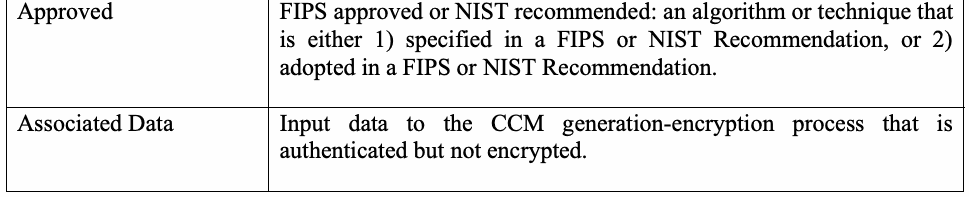
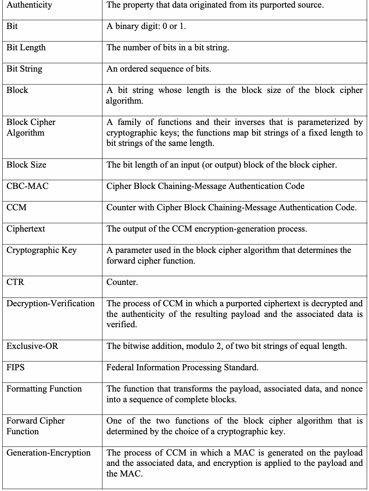
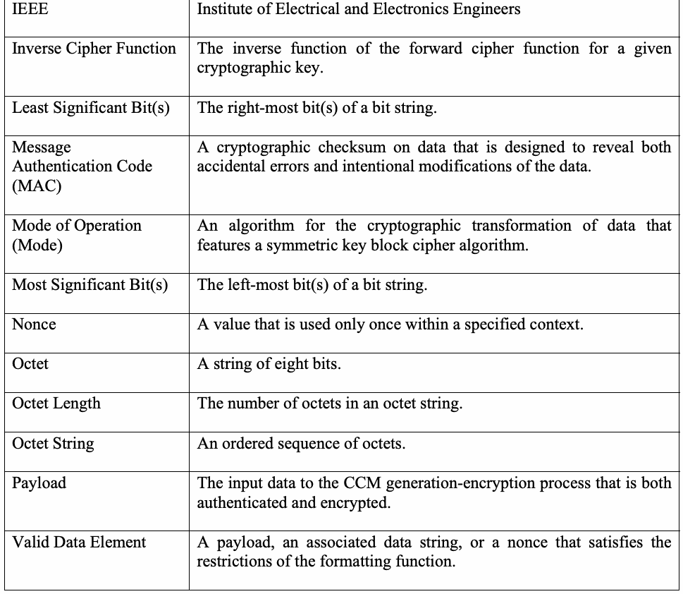

NIST Special Publication · PDF 原文抽出
Recommendation for Block Cipher Modes of Operation: the CCM Mode for Authentication and Confidentiality
認証と機密性のためのCCMモード
NIST SP 800-38C（Recommendation for Block Cipher Modes of Operation: the CCM Mode for Authentication and Confidentiality）の英文と日本語訳を段落ごとに並べた閲覧用ページです。CTRモードとCBC-MACを組み合わせ、データの機密性と真正性を提供するCCMモードについて、入力形式、生成・暗号化、復号・検証、MAC長および例を示します。NISTの2025年改訂決定と潜在的更新候補が公表されていますが、本訳は2007年の正誤表更新を含む現行Final PDFに基づきます。 翻訳は非公式です。要件の確認にはNIST の正式版 PDFを参照してください。
PDF から抽出した原文は原本との照合待ちです。
PDF p.2: 抽出できる文字が少ないため OCR または画像の照合が必要
PDF p.20: 二段組の可能性があるため読み順を原本と照合してください
Recommendation for Block
ブロック暗号モードに関する勧告
未レビュー訳NIST Special Publication 800-38C
NIST Special Publication 800-38C
未レビュー訳Cipher Modes of Operation: The CCM Mode for
暗号利用モード：認証と機密性のためのCCMモード
未レビュー訳Authentication and Confidentiality
認証と機密性
未レビュー訳Morris Dworkin
Morris Dworkin
未レビュー訳C O M P U T E R S E C U R I T Y
コンピューター・セキュリティ
未レビュー訳Recommendation for Block
ブロック暗号モードに関する勧告
未レビュー訳NIST Special Publication 800-38C
NIST Special Publication 800-38C
未レビュー訳Cipher Modes of Operation: The CCM Mode for Authentication and Confidentiality
暗号利用モード：認証と機密性のためのCCMモード
未レビュー訳Morris Dworkin
Morris Dworkin
未レビュー訳C O M P U T E R S E C U R I T Y
コンピューター・セキュリティ
未レビュー訳Computer Security Division Information Technology Laboratory National Institute of Standards and Technology Gaithersburg, MD 20899-8930
コンピューター・セキュリティ部門 情報技術研究所 米国国立標準技術研究所 メリーランド州ゲイサーズバーグ 20899-8930
未レビュー訳May 2004 (errata update 07-20-2007; corrected value of parameter B on p.19)
2004年5月（正誤表更新 2007-07-20；19ページのパラメーターBの値を訂正）
未レビュー訳U.S. Department of Commerce Donald L. Evans, Secretary
米国商務省 Donald L. Evans、長官
未レビュー訳Technology Administration Phillip J. Bond, Under Secretary of Commerce for Technology
技術局 Phillip J. Bond、商務技術担当次官
未レビュー訳National Institute of Standards and Technology Arden L. Bement, Jr., Director
米国国立標準技術研究所 Arden L. Bement, Jr.、所長
未レビュー訳Reports on Information Security Technology
情報セキュリティ技術に関する報告書
未レビュー訳The Information Technology Laboratory (ITL) at the National Institute of Standards and Technology (NIST) promotes the U.S. economy and public welfare by providing technical leadership for the Nation’s measurement and standards infrastructure. ITL develops tests, test methods, reference data, proof of concept implementations, and technical analyses to advance the development and productive use of information technology. ITL’s responsibilities include the development of technical, physical, administrative, and management standards and guidelines for the cost-effective security and privacy of sensitive unclassified information in Federal computer systems. This Special Publication 800-series reports on ITL’s research, guidance, and outreach efforts in computer security, and its collaborative activities with industry, government, and academic organizations.
米国国立標準技術研究所（NIST）の情報技術研究所（ITL）は、国家の計測・標準基盤に技術的リーダーシップを発揮し、米国経済と公共の福祉を促進する。ITLは情報技術の発展と生産的な利用を推進するため、試験、試験方法、参照データ、概念実証実装、技術分析を開発する。ITLの責務には、連邦コンピューター・システム内の機微な非機密情報の費用対効果に優れたセキュリティとプライバシーのため、技術的、物理的、管理的、マネジメント上の標準およびガイドラインを策定することが含まれる。このSpecial Publication 800シリーズは、コンピューター・セキュリティに関するITLの研究、ガイダンス、普及活動、および産業界、政府、学術機関との協働活動について報告する。
未レビュー訳Certain commercial entities, equipment, or materials may be identified in this document in order to describe an experimental procedure or concept adequately. Such identification is not intended to imply recommendation or endorsement by the National Institute of Standards and Technology, nor is it intended to imply that the entities, materials, or equipment are necessarily the best available for the purpose.
実験手順または概念を適切に説明するため、本書では特定の商業組織、機器、または材料を特定する場合がある。これらの特定は、米国国立標準技術研究所による推奨または保証を示すものではなく、また、当該組織、材料、機器が目的に最適な入手可能品であることを示すものでもない。 (may)
未レビュー訳National Institute of Standards and Technology Special Publication 800-38C Natl. Inst. Stand. Technol. Spec. Publ. 800-38C 25 pages (May 2004)
米国国立標準技術研究所 Special Publication 800-38C Natl. Inst. Stand. Technol. Spec. Publ. 800-38C 25ページ（2004年5月）
未レビュー訳CODEN: NSPUE2
CODEN: NSPUE2
未レビュー訳Abstract
概要
未レビュー訳This Recommendation defines a mode of operation, called CCM, for a symmetric key block cipher algorithm. CCM may be used to provide assurance of the confidentiality and the authenticity of computer data by combining the techniques of the Counter (CTR) mode and the Cipher Block Chaining-Message Authentication Code (CBC-MAC) algorithm.
本勧告は、対称鍵ブロック暗号アルゴリズムの動作モードとしてCCMと呼ばれる方式を定義する。CCMは、カウンター（CTR）モードと暗号ブロック連鎖メッセージ認証コード（CBC-MAC）アルゴリズムの技法を組み合わせることで、コンピューター・データの機密性と真正性を保証するために使用できる（may）。
未レビュー訳KEY WORDS: authenticated encryption; authentication; block cipher; confidentiality; cryptography; encryption; information security; message authentication code; mode of operation.
キーワード：認証付き暗号化；認証；ブロック暗号；機密性；暗号；暗号化；情報セキュリティ；メッセージ認証コード；動作モード。
未レビュー訳Table of Contents
目次
未レビュー訳1 PURPOSE — 1
1 目的 — 1
未レビュー訳2 AUTHORITY — 1
2 権限 — 1
未レビュー訳3 INTRODUCTION — 1
3 はじめに — 1
未レビュー訳4 DEFINITIONS, ABBREVIATIONS, AND SYMBOLS — 2
4 定義、略語、および記号 — 2
未レビュー訳4.1 DEFINITIONS AND ABBREVIATIONS — 2
4.1 定義および略語 — 2
未レビュー訳4.2 SYMBOLS — 4
4.2 記号 — 4
未レビュー訳4.2.1 Variables — 4
4.2.1 変数 — 4
未レビュー訳4.2.2 Operations and Functions — 6
4.2.2 演算および関数 — 6
未レビュー訳5 PRELIMINARIES — 6
5 予備事項 — 6
未レビュー訳5.1 UNDERLYING BLOCK CIPHER ALGORITHM — 6
5.1 基礎となるブロック暗号アルゴリズム — 6
未レビュー訳5.2 CRYPTOGRAPHIC PRIMITIVES — 7
5.2 暗号プリミティブ — 7
未レビュー訳5.3 DATA ELEMENTS — 7
5.3 データ要素 — 7
未レビュー訳5.4 INPUT FORMATTING — 8
5.4 入力形式 — 8
未レビュー訳5.5 EXAMPLES OF OPERATIONS AND FUNCTIONS — 8
5.5 演算および関数の例 — 8
未レビュー訳6 CCM SPECIFICATION — 9
6 CCM仕様 — 9
未レビュー訳6.1 GENERATION-ENCRYPTION PROCESS — 9
6.1 生成・暗号化プロセス — 9
未レビュー訳6.2 DECRYPTION-VERIFICATION PROCESS — 10
6.2 復号・検証プロセス — 10
未レビュー訳APPENDIX A: EXAMPLE OF A FORMATTING AND COUNTER GENERATION FUNCTION — 12
付録A：フォーマット関数およびカウンター生成関数の例 — 12
未レビュー訳A.1 LENGTH REQUIREMENTS — 12
A.1 長さの要件 — 12
未レビュー訳A.2 FORMATTING OF THE INPUT DATA — 12
A.2 入力データのフォーマット — 12
未レビュー訳A.2.1 Formatting of the Control Information and the Nonce — 13
A.2.1 制御情報およびノンスのフォーマット — 13
未レビュー訳A.2.2 Formatting of the Associated Data — 13
A.2.2 関連データのフォーマット — 13
未レビュー訳A.2.3 Formatting of the Payload — 14
A.2.3 ペイロードのフォーマット — 14
未レビュー訳A.3 FORMATTING OF THE COUNTER BLOCKS — 14
A.3 カウンター・ブロックのフォーマット — 14
未レビュー訳APPENDIX B: LENGTH OF THE MAC — 15
付録B：MACの長さ — 15
未レビュー訳B.1 AUTHENTICATION ASSURANCE — 15
B.1 認証保証 — 15
未レビュー訳B.2 SELECTION OF THE MAC LENGTH — 16
B.2 MAC長の選択 — 16
未レビュー訳APPENDIX C: EXAMPLE VECTORS — 17
付録C：例示ベクトル — 17
未レビュー訳C.1 EXAMPLE 1 — 17
C.1 例1 — 17
未レビュー訳C.2 EXAMPLE 2 — 17
C.2 例2 — 17
未レビュー訳C.3 EXAMPLE 3 — 18
C.3 例3 — 18
未レビュー訳C.4 EXAMPLE 4 — 19
C.4 例4 — 19
未レビュー訳APPENDIX D: REFERENCES — 21
付録D：参考文献 — 21
未レビュー訳Table of Figures
図一覧
未レビュー訳Table 1: Formatting of the Flags Octet in B — 13
表1：B内のフラグ・オクテットのフォーマット — 13
未レビュー訳0
未レビュー訳Table 2: Formatting of B — 13
表2：Bのフォーマット — 13
未レビュー訳0
未レビュー訳Table 3: Formatting of Ctr — 14
表3：Ctrのフォーマット — 14
未レビュー訳i
未レビュー訳Table 4: Formatting of the Flags Field in Ctr — 14
表4：Ctr内のフラグ・フィールドのフォーマット — 14
未レビュー訳i
未レビュー訳1 Purpose
1 目的
未レビュー訳This publication is the third Part in a series of Recommendations regarding modes of operation of symmetric key block cipher algorithms.
本刊行物は、対称鍵ブロック暗号アルゴリズムの動作モードに関する一連の勧告の第3部である。
未レビュー訳2 Authority
2 権限
未レビュー訳This document has been developed by the National Institute of Standards and Technology (NIST) in furtherance of its statutory responsibilities under the Federal Information Security Management Act (FISMA) of 2002, Public Law 107-347.
本書は、2002年連邦情報セキュリティ管理法（FISMA）（公法107-347）に基づく法定責務を遂行するため、米国国立標準技術研究所（NIST）が作成した。
未レビュー訳NIST is responsible for developing standards and guidelines, including minimum requirements, for providing adequate information security for all agency operations and assets, but such standards and guidelines shall not apply to national security systems. This guideline is consistent with the requirements of the Office of Management and Budget (OMB) Circular A-130, Section 8b(3), Securing Agency Information Systems, as analyzed in A-130, Appendix IV: Analysis of Key Sections. Supplemental information is provided in A-130, Appendix III.
NISTは、国家安全保障システムには適用されないものの、すべての機関の業務と資産に十分な情報セキュリティを提供するための最低要件を含む標準およびガイドラインを策定する責任を負う。本ガイドラインは、Office of Management and Budget (OMB) Circular A-130のSection 8b(3), Securing Agency Information Systemsと整合しており、A-130 Appendix IV: Analysis of Key Sectionsで分析されている。補足情報はA-130 Appendix IIIに記載されている。（shall not）
未レビュー訳This guideline has been prepared for use by federal agencies. It may be used by nongovernmental organizations on a voluntary basis and is not subject to copyright. (Attribution would be appreciated by NIST.)
本ガイドラインは連邦機関が使用するために作成された。非政府組織は任意で使用でき、著作権の対象ではない。（NISTは出典の明記を歓迎する。）（may） (would)
未レビュー訳Nothing in this document should be taken to contradict standards and guidelines made mandatory and binding on federal agencies by the Secretary of Commerce under statutory authority. Nor should these guidelines be interpreted as altering or superseding the existing authorities of the Secretary of Commerce, Director of the OMB, or any other federal official.
本書のいかなる記述も、法的権限に基づき商務長官が連邦機関に義務付け拘束力を持たせた標準およびガイドラインと矛盾するものと解釈すべきではない。また、本ガイドラインは商務長官、OMB長官、またはその他の連邦職員の既存の権限を変更または置き換えるものと解釈すべきではない。（should）（should）
未レビュー訳Conformance testing for implementations of the mode of operation that is specified in this Part of the Recommendation will be conducted within the framework of the Cryptographic Module Validation Program (CMVP), a joint effort of NIST and the Communications Security Establishment of the Government of Canada. An implementation of a mode of operation must adhere to the requirements in this Recommendation in order to be validated under the CMVP. The requirements of this Recommendation are indicated by the word “shall.”
本勧告の本編で規定する動作モードの実装適合性試験は、NISTとカナダ政府のCommunications Security Establishmentが共同で実施するCryptographic Module Validation Program (CMVP)の枠組み内で行われる。本勧告に定める要件に従わなければ、動作モードの実装はCMVPの下で検証を受けられない。本勧告の要件は“shall”という語で示される。（will）（must）
未レビュー訳3 Introduction
3 はじめに
未レビュー訳This Recommendation specifies an algorithm, Counter with Cipher Block Chaining-Message Authentication Code [1], abbreviated CCM, that can provide assurance of the confidentiality and authenticity of data. CCM is based on an approved symmetric key block cipher algorithm whose block size is 128 bits, such as the Advanced Encryption Standard (AES) algorithm currently specified in Federal Information Processing Standard (FIPS) Pub. 197 [2]; thus, CCM cannot be used with the Triple Data Encryption Algorithm [3], whose block size is 64 bits. CCM can be considered a mode of operation of the block cipher algorithm. As with other modes of operation, a single key to the block cipher must be established beforehand among the parties to the data; thus, CCM should be implemented within a well-designed key management structure. The security properties of CCM depend, at a minimum, on the secrecy of the key.
本勧告は、データの機密性と真正性を保証できるアルゴリズムであるCounter with Cipher Block Chaining-Message Authentication Code [1]（略称CCM）を規定する。CCMは、ブロック長が128ビットの承認済み対称鍵ブロック暗号アルゴリズムに基づく。例えば、現在Federal Information Processing Standard (FIPS) Pub. 197 [2]で規定されているAdvanced Encryption Standard (AES)アルゴリズムがある。したがって、ブロック長が64ビットのTriple Data Encryption Algorithm [3]にはCCMを使用できない。CCMはブロック暗号アルゴリズムの動作モードとみなすことができる。他の動作モードと同様に、データの関係者間で事前にブロック暗号用の単一鍵を確立しなければならない。したがって、CCMは適切に設計された鍵管理構造の中で実装すべきである。CCMのセキュリティ特性は、少なくとも鍵の秘密性に依存する。（can）（cannot）（must）（should） (can)
未レビュー訳CCM is intended for use in a packet environment, i.e., when all of the data is available in storage before CCM is applied; CCM is not designed to support partial processing or stream processing. The input to CCM includes three elements: 1) data that will be both authenticated and encrypted, called the payload; 2) associated data, e.g., a header, that will be authenticated but not encrypted; and 3) a unique value, called a nonce, that is assigned to the payload and the associated data.
CCMはパケット環境、すなわちCCMを適用する前にすべてのデータが記憶領域にそろっている状況での使用を意図している。CCMは部分処理やストリーム処理を支援するよう設計されていない。CCMへの入力は3つの要素からなる。1) 認証と暗号化の両方を行うデータ（ペイロードと呼ぶ）、2) ヘッダーなど、認証は行うが暗号化しない関連データ、3) ペイロードおよび関連データに割り当てる一意の値（ノンスと呼ぶ）。 (will) (will)
未レビュー訳CCM consists of two related processes: generation-encryption and decryption-verification, which combine two cryptographic primitives: counter mode encryption and cipher block chaining-based authentication. Only the forward cipher function of the block cipher algorithm is used within these primitives.
CCMは、生成・暗号化と復号・検証という関連する2つのプロセスからなり、カウンター・モード暗号化と暗号ブロック連鎖に基づく認証という2つの暗号プリミティブを組み合わせる。これらのプリミティブ内では、ブロック暗号アルゴリズムの順方向暗号関数のみを使用する。
未レビュー訳In generation-encryption, cipher block chaining is applied to the payload, the associated data, and the nonce to generate a message authentication code (MAC); then, counter mode encryption is applied to the MAC and the payload to transform them into an unreadable form, called the ciphertext. Thus, CCM generation-encryption expands the size of the payload by the size of the MAC. In decryption-verification, counter mode decryption is applied to the purported ciphertext to recover the MAC and the corresponding payload; then, cipher block chaining is applied to the payload, the received associated data, and the received nonce to verify the correctness of the MAC. Successful verification provides assurance that the payload and the associated data originated from a source with access to the key.
生成・暗号化では、暗号ブロック連鎖をペイロード、関連データ、ノンスに適用してメッセージ認証コード（MAC）を生成する。次に、カウンター・モード暗号化をMACとペイロードに適用し、暗号文と呼ばれる判読不能な形式に変換する。したがって、CCMによる生成・暗号化では、MACの長さ分だけペイロードのサイズが増える。復号・検証では、暗号文とされるデータにカウンター・モード復号を適用し、MACと対応するペイロードを復元する。次に、ペイロード、受信した関連データ、受信したノンスに暗号ブロック連鎖を適用して、MACの正しさを検証する。検証に成功すると、ペイロードと関連データが鍵へのアクセス権を持つ送信元に由来することが保証される。
未レビュー訳A MAC provides stronger assurance of authenticity than a checksum or an error detecting code. The verification of a (non-cryptographic) checksum or an error detecting code is designed to detect only accidental modifications of the data, while the verification of a MAC, as occurs in CCM, is designed to detect intentional, unauthorized modifications of the data, as well as accidental modifications.
MACは、チェックサムや誤り検出符号より強い真正性保証を提供する。チェックサム（非暗号学的）または誤り検出符号の検証は、データの偶発的な変更のみを検出するよう設計されている。一方、CCMで用いられるMACの検証は、データの意図的かつ未認可の変更と偶発的な変更の両方を検出するよう設計されている。
未レビュー訳This specification of CCM is intended to be compatible with the use of CCM within the draft amendment [4] to the IEEE Standard 802.11 for wireless local area networks [5].
このCCM仕様は、改訂案[4]（無線ローカル・エリア・ネットワーク向けIEEE Standard 802.11 [5]）内でCCMを使用する場合との互換性を意図している。
未レビュー訳4 Definitions, Abbreviations, and Symbols
4 定義、略語、および記号
未レビュー訳4.1 Definitions and Abbreviations
4.1 定義および略語
未レビュー訳| Approved | FIPS approved or NIST recommended: an algorithm or technique that is either 1) specified in a FIPS or NIST Recommendation, or 2) adopted in a FIPS or NIST Recommendation. |
| Associated Data | Input data to the CCM generation-encryption process that is authenticated but not encrypted. |
原本の表画像

| 承認済み（Approved） | FIPS承認済みまたはNIST推奨：1) FIPSまたはNIST勧告で規定された、または2) FIPSまたはNIST勧告に採用されたアルゴリズムまたは技法。 |
| 関連データ（Associated Data） | CCM生成・暗号化プロセスへの入力データであり、認証されるが暗号化されない。 |
| Authenticity | The property that data originated from its purported source. |
| Bit | A binary digit: 0 or 1. |
| Bit Length | The number of bits in a bit string. |
| Bit String | An ordered sequence of bits. |
| Block | A bit string whose length is the block size of the block cipher algorithm. |
| Block Cipher Algorithm | A family of functions and their inverses that is parameterized by cryptographic keys; the functions map bit strings of a fixed length to bit strings of the same length. |
| Block Size | The bit length of an input (or output) block of the block cipher. |
| CBC-MAC | Cipher Block Chaining-Message Authentication Code |
| CCM | Counter with Cipher Block Chaining-Message Authentication Code. |
| Ciphertext | The output of the CCM encryption-generation process. |
| Cryptographic Key | A parameter used in the block cipher algorithm that determines the forward cipher function. |
| CTR | Counter. |
| Decryption-Verification | The process of CCM in which a purported ciphertext is decrypted and the authenticity of the resulting payload and the associated data is verified. |
| Exclusive-OR | The bitwise addition, modulo 2, of two bit strings of equal length. |
| FIPS | Federal Information Processing Standard. |
| Formatting Function | The function that transforms the payload, associated data, and nonce into a sequence of complete blocks. |
| Forward Cipher Function | One of the two functions of the block cipher algorithm that is determined by the choice of a cryptographic key. |
| Generation-Encryption | The process of CCM in which a MAC is generated on the payload and the associated data, and encryption is applied to the payload and the MAC. |
原本の表画像

| 真正性（Authenticity） | データが、そのデータの出所とされる送信元から発生したという特性。 |
| ビット（Bit） | 2進数字：0または1。 |
| ビット長（Bit Length） | ビット列のビット数。 |
| ビット列（Bit String） | 順序付けられたビットの列。 |
| ブロック（Block） | ブロック暗号アルゴリズムのブロック・サイズと同じ長さのビット列。 |
| ブロック暗号アルゴリズム（Block Cipher Algorithm） | 暗号鍵によってパラメーター化された関数とその逆関数の族。各関数は、固定長のビット列を同じ長さのビット列に写像する。 |
| ブロック・サイズ（Block Size） | ブロック暗号の入力（または出力）ブロックのビット長。 |
| CBC-MAC | Cipher Block Chaining-Message Authentication Code（暗号ブロック連鎖メッセージ認証コード） |
| CCM | Counter with Cipher Block Chaining-Message Authentication Code（カウンターと暗号ブロック連鎖メッセージ認証コード） |
| 暗号文（Ciphertext） | CCMの暗号化・生成プロセスの出力。 |
| 暗号鍵（Cryptographic Key） | ブロック暗号アルゴリズムで使用され、順方向暗号関数を決定するパラメーター。 |
| CTR | Counter（カウンター）。 |
| 復号・検証（Decryption-Verification） | CCMのプロセスの一つ。暗号文とされるデータを復号し、復元されたペイロードと関連データの真正性を検証する。 |
| 排他的論理和（Exclusive-OR） | 等しい長さの2つのビット列を法2でビット単位に加算する演算。 |
| FIPS | Federal Information Processing Standard（連邦情報処理標準）。 |
| フォーマット関数（Formatting Function） | ペイロード、関連データ、ノンスを、完全なブロックの列に変換する関数。 |
| 順方向暗号関数（Forward Cipher Function） | 暗号鍵の選択によって決定される、ブロック暗号アルゴリズムの2つの関数のうちの一つ。 |
| 生成・暗号化（Generation-Encryption） | ペイロードと関連データに対するMACを生成し、ペイロードとMACを暗号化するCCMのプロセス。 |
| IEEE | Institute of Electrical and Electronics Engineers |
| Inverse Cipher Function | The inverse function of the forward cipher function for a given cryptographic key. |
| Least Significant Bit(s) | The right-most bit(s) of a bit string. |
| Message Authentication Code (MAC) | A cryptographic checksum on data that is designed to reveal both accidental errors and intentional modifications of the data. |
| Mode of Operation (Mode) | An algorithm for the cryptographic transformation of data that features a symmetric key block cipher algorithm. |
| Most Significant Bit(s) | The left-most bit(s) of a bit string. |
| Nonce | A value that is used only once within a specified context. |
| Octet | A string of eight bits. |
| Octet Length | The number of octets in an octet string. |
| Octet String | An ordered sequence of octets. |
| Payload | The input data to the CCM generation-encryption process that is both authenticated and encrypted. |
| Valid Data Element | A payload, an associated data string, or a nonce that satisfies the restrictions of the formatting function. |
原本の表画像

| IEEE | Institute of Electrical and Electronics Engineers（電気電子技術者協会） |
| 逆方向暗号関数（Inverse Cipher Function） | 所与の暗号鍵に対する順方向暗号関数の逆関数。 |
| 最下位ビット（Least Significant Bit(s)） | ビット列の最も右側のビット。 |
| メッセージ認証コード（Message Authentication Code (MAC)） | 偶発的な誤りと意図的なデータ改変の両方を明らかにするよう設計された、データに対する暗号学的チェックサム。 |
| 動作モード（Mode of Operation (Mode)） | 対称鍵ブロック暗号アルゴリズムを用いてデータを暗号変換するアルゴリズム。 |
| 最上位ビット（Most Significant Bit(s)） | ビット列の最も左側のビット。 |
| ノンス（Nonce） | 指定されたコンテキスト内で一度だけ使用される値。 |
| オクテット（Octet） | 8ビットの列。 |
| オクテット長（Octet Length） | オクテット列に含まれるオクテット数。 |
| オクテット列（Octet String） | 順序付けられたオクテットの列。 |
| ペイロード（Payload） | CCM生成・暗号化プロセスへの入力データであり、認証と暗号化の両方を受ける。 |
| 有効なデータ要素（Valid Data Element） | フォーマット関数の制約を満たすペイロード、関連データ列、またはノンス。 |
4.2 Symbols
4.2 記号
未レビュー訳4.2.1 Variables
4.2.1 変数
未レビュー訳The octet length of the associated data.
関連データのオクテット長。
未レビュー訳a
未レビュー訳The associated data string.
関連データ列。
未レビュー訳A
未レビュー訳The bit length of the associated data.
関連データのビット長。
未レビュー訳Alen
Alen
未レビュー訳The ith block of the formatted input.
フォーマット済み入力の第iブロック。
未レビュー訳B
未レビュー訳i B
i B
未レビュー訳The ciphertext.
暗号文。
未レビュー訳C
未レビュー訳The bit length of the ciphertext.
暗号文のビット長。
未レビュー訳Clen
Clen
未レビュー訳The ith counter block.
第iカウンター・ブロック。
未レビュー訳Ctr i
Ctr i
未レビュー訳The block cipher key.
ブロック暗号鍵。
未レビュー訳K
未レビュー訳The bit length of the block cipher key.
ブロック暗号鍵のビット長。
未レビュー訳Klen
Klen
未レビュー訳The number of blocks in the formatted payload.
フォーマット済みペイロードのブロック数。
未レビュー訳m
未レビュー訳MaxErrs The maximum number of times that the output of any implementation of the decryption-verification process can be INVALID before the key is retired.
MaxErrs 復号・検証プロセスの任意の実装の出力がINVALIDとなり得る最大回数。この回数に達すると鍵は廃止される。（can）
未レビュー訳The octet length of the nonce.
ノンスのオクテット長。
未レビュー訳n
未レビュー訳The nonce.
ノンス。
未レビュー訳N
未レビュー訳The bit length of the nonce.
ノンスのビット長。
未レビュー訳Nlen
Nlen
未レビュー訳The payload.
ペイロード。
未レビュー訳P
未レビュー訳The bit length of the payload.
ペイロードのビット長。
未レビュー訳Plen
Plen
未レビュー訳The octet length of the binary representation of the octet length of the payload.
ペイロードのオクテット長をオクテットで表した値のオクテット長。
未レビュー訳q
未レビュー訳A bit string representation of the octet length of P.
Pのオクテット長をビット列で表したもの。
未レビュー訳Q
未レビュー訳The number of blocks in the formatted input data (N, A, P).
フォーマット済み入力データ（N、A、P）に含まれるブロック数。
未レビュー訳r
未レビュー訳The highest acceptable probability for an inauthentic message to pass the
真正でないメッセージが
未レビュー訳Risk
Risk
未レビュー訳decryption-verification process.
復号・検証プロセスを通過する確率の許容上限。
未レビュー訳The octet length of the MAC.
MACのオクテット長。
未レビュー訳t
未レビュー訳The MAC that is generated as an internal variable in the CCM
CCMの内部変数として生成されるMAC
未レビュー訳T
未レビュー訳processes.
プロセス。
未レビュー訳The bit length of the MAC.
MACのビット長。
未レビュー訳Tlen
Tlen
未レビュー訳4.2.2 Operations and Functions
4.2.2 演算および関数
未レビュー訳0x
未レビュー訳The prefix to a bit string that is represented in hexadecimal characters.
16進数字で表されるビット列の接頭辞。
未レビュー訳The binary representation of the non-negative integer x, in s bits, where x<2s.
非負整数xをsビットで表した2進表現。ここでx<2sである。
未レビュー訳[x] s
[x] s
未レビュー訳The least integer that is not less than the real number x.
実数x以上である最小の整数。
未レビュー訳⎡x⎤
⎡x⎤
未レビュー訳X || Y
X || Y
未レビュー訳The concatenation of two bit strings X and Y.
2つのビット列XおよびYの連結。
未レビュー訳X ⊕ Y The bitwise exclusive-OR of two bit strings X and Y of the same length.
X ⊕ Y 2つの同じ長さのビット列XおよびYのビット単位排他的論理和。
未レビュー訳CIPH (X) The output of the forward cipher function of the block cipher algorithm under the
CIPH (X) ブロック暗号アルゴリズムの順方向暗号関数を、次の鍵の下で適用した出力
未レビュー訳K
未レビュー訳key K applied to the data block X.
データ・ブロックXに適用した鍵K。
未レビュー訳LSB (X) The bit string consisting of the s right-most bits of the bit string X. s
LSB (X) ビット列Xの右端sビットからなるビット列。s
未レビュー訳MSB (X) The bit string consisting of the s left-most bits of the bit string X.
MSB (X) ビット列Xの左端sビットからなるビット列。
未レビュー訳s
未レビュー訳lg(x)
lg(x)
未レビュー訳The base 2 logarithm of the positive real number x.
正の実数xの底2の対数。
未レビュー訳5 Preliminaries
5 予備事項
未レビュー訳The selection of a block cipher algorithm and secret key are discussed in Section 5.1. The two cryptographic primitives that CCM requires for its operation are discussed in Section 5.2. The data elements of CCM are discussed in Section 5.3. The formatting of valid data elements is discussed in Section 5.4. Examples of operations and functions are given in Section 5.5.
ブロック暗号アルゴリズムと秘密鍵の選択については5.1節で説明する。CCMの動作に必要な2つの暗号プリミティブについては5.2節で説明する。CCMのデータ要素については5.3節で説明する。有効なデータ要素のフォーマットについては5.4節で説明する。演算および関数の例は5.5節に示す。
未レビュー訳5.1 Underlying Block Cipher Algorithm
5.1 基礎となるブロック暗号アルゴリズム
未レビュー訳The CCM algorithm depends on the choice of an underlying symmetric key block cipher algorithm. The CCM algorithm is thus a mode of operation (mode, for short) of the symmetric key block cipher. The underlying block cipher algorithm shall be approved, and a secret key for the block cipher algorithm shall be generated uniformly at random, or close to uniformly at random, i.e., so that each possible key is (nearly) equally likely to be generated. Moreover, the key should be established for the parties to the information by an approved key establishment method. The key shall be kept secret and shall only be used for the CCM mode. The total number of invocations of the block cipher algorithm during the lifetime of the key shall be limited to 261. Key establishment and key management are outside the scope of this Recommendation.
CCMアルゴリズムは、基礎となる対称鍵ブロック暗号アルゴリズムの選択に依存する。したがってCCMアルゴリズムは、対称鍵ブロック暗号の動作モード（略してモード）である。基礎となるブロック暗号アルゴリズムは承認済みでなければならず、ブロック暗号アルゴリズムの秘密鍵は一様ランダム、またはほぼ一様ランダムに生成しなければならない。すなわち、可能な各鍵が（ほぼ）同じ確率で生成されるようにする。さらに、情報の関係者間で承認済みの鍵確立方法を用いて鍵を確立すべきである。鍵は秘密に保持し、CCMモードにのみ使用しなければならない。鍵の有効期間中にブロック暗号アルゴリズムを呼び出す総回数は261に制限しなければならない。鍵確立と鍵管理は本勧告の適用範囲外である。 (should) (shall) (shall) (shall) (shall) (shall)
未レビュー訳For any given key, the underlying block cipher algorithm of the mode consists of two functions that are inverses of each other. As part of the choice of the block cipher algorithm, one of the two functions of the block cipher algorithm is designated as the forward cipher function. ∗ The inverse of this process is called the inverse cipher function; however, the CCM mode does not require the inverse cipher function.
任意の鍵について、モードの基礎となるブロック暗号アルゴリズムは、互いに逆関数となる2つの関数からなる。ブロック暗号アルゴリズムを選択する際、この2つの関数のうち一方を順方向暗号関数として指定する。∗ この処理の逆関数は逆方向暗号関数と呼ばれるが、CCMモードは逆方向暗号関数を必要としない。
未レビュー訳The forward cipher function is a function on bit strings of a fixed bit length; the strings are called blocks, and their length is called the block size. For CCM, the block size of the block cipher algorithm shall be 128 bits; currently, the AES algorithm is the only approved block cipher algorithm with this block size.
順方向暗号関数は、固定ビット長のビット列に作用する関数である。これらのビット列をブロックと呼び、その長さをブロック・サイズと呼ぶ。CCMでは、ブロック暗号アルゴリズムのブロック・サイズは128ビットでなければならない。現時点で、このブロック・サイズを持つ承認済みブロック暗号アルゴリズムはAESアルゴリズムのみである。 (shall)
未レビュー訳The CCM key, denoted K, is the block cipher key; the forward cipher function of the block cipher with this key is denoted CIPH . The bit length of K is denoted Klen.
CCM鍵はKと表記し、ブロック暗号鍵である。この鍵を用いるブロック暗号の順方向暗号関数はCIPHと表記する。Kのビット長はKlenと表記する。
未レビュー訳K
未レビュー訳5.2 Cryptographic Primitives
5.2 暗号プリミティブ
未レビュー訳The CCM specification essentially combines two cryptographic mechanisms that are based on the forward cipher function. One mechanism is the Counter (CTR) mode for confidentiality, which is specified for general use in the first Part of this Recommendation [6]. The CTR mode requires the generation of a sufficiently long sequence of blocks called the counter blocks. The counter blocks must be distinct within a single invocation and across all other invocations of the CTR mode under any given key, but they need not be secret. This requirement on the counter blocks extends to the CCM mode. See [6] for further discussion of the generation of counter blocks; see Section 5.4 below for an additional requirement on the counter blocks in CCM.
CCM仕様は、基本的に順方向暗号関数に基づく2つの暗号機構を組み合わせる。一方は機密性を提供するカウンター（CTR）モードであり、本勧告の第1部[6]で一般用途向けに規定されている。CTRモードでは、カウンター・ブロックと呼ばれる十分に長いブロック列を生成する必要がある。カウンター・ブロックは、単一の呼出し内および所与の鍵の下での他のすべてのCTRモード呼出し間で互いに異ならなければならないが、秘密である必要はない。このカウンター・ブロックに関する要件はCCMモードにも適用される。カウンター・ブロックの生成に関する詳細は[6]を参照し、CCMのカウンター・ブロックに対する追加要件については以下の5.4節を参照する。 (must)
未レビュー訳The other cryptographic mechanism within CCM is an adaptation of the cipher block chaining (CBC) technique from [6] to provide assurance of authenticity. Specifically, the CBC technique with an initialization vector of zero is applied to the data to be authenticated; the final block of the resulting CBC output, possibly truncated, serves as a message authentication code (MAC) of the data. The algorithm for generating a MAC in this fashion is commonly called CBC-MAC. This Recommendation does not approve CBC-MAC as an authentication mode outside of the context of the CCM specification; however, a variation of CBC-MAC is proposed for general use in the second Part of this Recommendation [7].
CCMにおけるもう一つの暗号機構は、真正性を保証するために[6]の暗号ブロック連鎖（CBC）技法を適用したものである。具体的には、認証対象データに対し、初期化ベクトルをゼロとしてCBC技法を適用する。得られるCBC出力の最終ブロックは、場合によっては切り詰められ、データのメッセージ認証コード（MAC）として機能する。この方法でMACを生成するアルゴリズムは、一般にCBC-MACと呼ばれる。本勧告は、CCM仕様の範囲外でCBC-MACを認証モードとして承認しない。ただし、CBC-MACの変形方式は、本勧告の第2部[7]で一般用途向けに提案されている。
未レビュー訳The same key, K, is used for both the CTR and CBC-MAC mechanisms within CCM.
CCM内のCTR機構とCBC-MAC機構の両方で同じ鍵Kを使用する。
未レビュー訳5.3 Data Elements
5.3 データ要素
未レビュー訳The data that CCM protects consists of a message, i.e., a bit string, called the payload, denoted P, of bit length denoted Plen, and a bit string, called the associated data, denoted A. The associated data is optional, i.e., A may be the empty string.** CCM provides assurance of the confidentiality of P and assurance of the authenticity of the origin of both A and P; confidentiality is not provided for A.
CCMが保護するデータは、ペイロードと表記するメッセージ（すなわちビット列）Pからなる。Pのビット長はPlenと表記する。また、関連データと表記するビット列Aからなる。関連データは任意であり、Aは空文字列であってもよい。** CCMはPの機密性と、AおよびPの両方の送信元の真正性を保証する。Aの機密性は提供しない。 (may)
未レビュー訳A bit string called the nonce, denoted N, is assigned to the data pair to be protected, i.e., the
保護対象のデータ・ペアに、ノンスと表記するビット列Nを割り当てる。すなわち、
未レビュー訳∗ For the AES algorithm, the forward cipher is explicitly identified in [2]. ** The payload may also be empty, in which case the specification degenerates to an authentication mode on the associated data. payload and its associated data. The nonce shall be non-repeating in the sense that any two distinct data pairs to be protected by CCM during the lifetime of the key shall be assigned distinct nonces. In effect, the nonce determines an invocation of CCM. The nonce is not required to be random.
∗ AESアルゴリズムの場合、順方向暗号関数は[2]で明示的に特定されている。 ** ペイロードが空であってもよく、その場合、この仕様は関連データに対する認証モードに退化する。ペイロードとその関連データ。ノンスは、CCMによって鍵の有効期間中に保護される任意の2つの異なるデータ・ペアに異なるノンスが割り当てられるという意味で、再使用されてはならない。実質的に、ノンスはCCMの呼出しを決定する。ノンスをランダムにする必要はない。 (shall) (shall) (may)
未レビュー訳The MAC that is generated within CCM is an internal variable, denoted T. The bit length of T, denoted Tlen, is a parameter of the mode that shall be fixed for all invocations of CCM with the given key. The requirements for the selection of Tlen are discussed in Appendix B.
CCM内で生成されるMACは内部変数であり、Tと表記する。Tのビット長はTlenと表記し、所与の鍵を用いるCCMのすべての呼出しについて固定しなければならない。Tlenの選択要件は付録Bで説明する。 (shall)
未レビュー訳5.4 Input Formatting
5.4 入力フォーマット
未レビュー訳The CCM data elements N, P, and A shall be formatted into a non-empty sequence of complete data blocks, denoted B , B , …, B for some non-negative integer r, in accordance with a function
CCMデータ要素N、P、Aは、フォーマット関数に従って、完全なデータ・ブロックからなる空でない列B、B、…、B（非負整数rに対する）にフォーマットしなければならない。 (shall)
未レビュー訳0 1 r B B B
0 1 r B B B
未レビュー訳called the formatting function (in [8], the formatting function is called the encoding function, β). The value of r depends on the formatting function and the input elements. For any given key, the following three properties shall hold for the formatting function:
これをフォーマット関数と呼ぶ（[8]ではフォーマット関数を符号化関数βと呼ぶ）。rの値はフォーマット関数と入力要素に依存する。任意の鍵について、フォーマット関数は以下の3つの特性を満たさなければならない： (shall)
未レビュー訳1.The first block, B , uniquely determines the nonce N. 0 B
1.最初のブロックBはノンスNを一意に決定する。0 B
未レビュー訳2.The formatted data uniquely determines P and A; moreover, if (N, P, A) and (N, P', A') are distinct input triples whose formatting is B , B , …, B and B ', B ', …, B ', then B is 0 1 r 0 1 r' i B B B B B B B distinct from B ' for some index i such that i≤r and i ≤r '. ∗ i B
2.フォーマット済みデータはPとAを一意に決定する。さらに、フォーマット関数がB , B , …, BおよびB ', B ', …, B 'を出力する、異なる入力三つ組（N, P, A）と（N, P', A'）について、Bは0 1 r 0 1 r' i B B B B B B B、ある添字i（i≤rかつi ≤r '）に対してB 'と異なる。∗ i B
未レビュー訳3.The first block, B , is distinct from any counter blocks that are used across all invocations 0 B of CCM under the key.
3.最初のブロックBは、鍵の下でCCMのすべての呼出しにわたって使用されるどのカウンター・ブロックとも異なる。0 B
未レビュー訳The third property suggests that the formatting function and the counter generation function should not be selected or constructed independently of each other.
3番目の特性は、フォーマット関数とカウンター生成関数を互いに独立に選択または構成すべきではないことを示唆している。 (should)
未レビュー訳The formatting function may impose restrictions on the contents and the bit lengths of the input data N, P, and A, as well as the parameter Tlen. For example, the bit lengths may be restricted to multiples of eight and to a given range of values. Values that satisfy the restrictions of the formatting function are called valid. No value of Tlen smaller than 32 shall be valid.
フォーマット関数は、入力データN、P、Aの内容とビット長、およびパラメーターTlenに制約を課す場合がある。例えば、ビット長を8の倍数および所定の値の範囲内に制限する場合がある。フォーマット関数の制約を満たす値を有効と呼ぶ。32未満のTlen値は有効としてはならない。 (shall) (may) (may)
未レビュー訳An example of a formatting function and counter generation function that together satisfy these requirements is given in Appendix A. Alternative formatting functions may be developed in the future.
これらの要件をともに満たすフォーマット関数およびカウンター生成関数の例を付録Aに示す。代替のフォーマット関数が将来開発される可能性がある。 (may)
未レビュー訳5.5 Examples of Operations and Functions
5.5 演算および関数の例
未レビュー訳Given a positive integer s and a non-negative integer x that is less than 2s, the binary representation of x in s bits is denoted [x] . For example, for the (base 10) integer 45, the binary
正の整数sおよび2s未満の非負整数xについて、xをsビットで表した2進表現を[x]と表記する。例えば、（10進）整数45の2進表現
未レビュー訳s
未レビュー訳representation (base 2) is 101101, so [45] = 00101101.
表現（基数2）は101101であるため、[45] = 00101101。
未レビュー訳8
未レビュー訳The concatenation operation on bit strings is denoted ||; for example, 001 || 10111 = 00110111.
ビット列の連結演算は||と表記する。例えば、001 || 10111 = 00110111である。
未レビュー訳∗ This property deals with the case that a nonce is repeated within two distinct input triples. Although the legitimate source/sender of the data is already required to assign distinct nonces to different input triples, the security model in [8] takes into account that the recipient of purported ciphertexts might not monitor whether a nonce is repeated.
∗ この特性は、2つの異なる入力三つ組でノンスが繰り返される場合を扱う。正当なデータ送信元／送信者には、異なる入力三つ組に異なるノンスを割り当てることがすでに求められているが、[8]のセキュリティ・モデルでは、暗号文とされるデータの受信者がノンスの重複を監視しない可能性を考慮している。 (might)
未レビュー訳Given bit strings of equal length, the exclusive-OR operation, denoted ⊕, specifies the addition, modulo 2, of the bits in each bit position, i.e., without carries. For example, 10011 ⊕ 10101= 00110.
等しい長さのビット列に対して、排他的論理和演算（⊕）は、各ビット位置のビットを桁上がりなしで法2加算することを表す。例えば、10011 ⊕ 10101 = 00110である。
未レビュー訳The functions LSB and MSB return the s least significant (i.e., right-most) bits and the s most
LSBおよびMSB関数は、それぞれ引数の最下位（すなわち右端）sビットと最上位（すなわち左端）の
未レビュー訳s
未レビュー訳s
未レビュー訳significant (i.e., left-most) bits of their arguments, respectively. For example, LSB (111011010)
有意ビット（すなわち左端）をそれぞれ返す。例えば、LSB (111011010)
未レビュー訳3
未レビュー訳= 010, and MSB (111011010) = 1110. 4
= 010、およびMSB (111011010) = 1110。4
未レビュー訳Given a positive real number x, the base 2 logarithm x is denoted lg(x). For example, lg(210)=10.
正の実数xについて、底2の対数をlg(x)と表記する。例えば、lg(210)=10である。
未レビュー訳6 CCM Specification
6 CCM仕様
未レビュー訳The two CCM processes are called generation-encryption and decryption-verification. The prerequisites, inputs, outputs, steps, and summaries for the execution of the two CCM processes are specified in Sections 6.1 and 6.2 below. The prerequisites are inputs that are typically fixed across many invocations of CCM. The prerequisites and inputs shall meet the requirements in Section 5.
CCMの2つのプロセスを生成・暗号化および復号・検証と呼ぶ。2つのCCMプロセスを実行するための前提条件、入力、出力、手順、要約を、以下の6.1節および6.2節で規定する。前提条件とは、通常、CCMの多数の呼出しにわたって固定される入力である。前提条件と入力は5節の要件を満たさなければならない。 (shall)
未レビュー訳There is some flexibility in the order of the steps of the two processes. For example, the generation of the counter blocks can occur at any time before they are used; in fact, the counter blocks may be generated in advance and be considered as inputs to the processes.
2つのプロセスの手順の順序には一定の柔軟性がある。例えば、カウンター・ブロックの生成は、それらを使用する前であればいつでも行うことができる。実際、カウンター・ブロックを事前に生成してプロセスへの入力とみなすこともできる。 (may) (can)
未レビュー訳6.1 Generation-Encryption Process
6.1 生成・暗号化プロセス
未レビュー訳The following is a specification of the generation-encryption process of CCM:
以下に、CCMの生成・暗号化プロセスを規定する：
未レビュー訳Prerequisites: block cipher algorithm; key K; counter generation function; formatting function; MAC length Tlen.
前提条件：ブロック暗号アルゴリズム；鍵K；カウンター生成関数；フォーマット関数；MAC長Tlen。
未レビュー訳Input: valid nonce N; valid payload P of length Plen bits; valid associated data A;
入力：有効なノンスN；長さPlenビットの有効なペイロードP；有効な関連データA；
未レビュー訳Output: ciphertext C.
出力：暗号文C。
未レビュー訳Steps:
手順：
未レビュー訳1.Apply the formatting function to (N, A, P) to produce the blocks B , B , …, B .
1.フォーマット関数を(N, A, P)に適用し、ブロックB、B、…、Bを生成する。
未レビュー訳4.Set T=MSB (Y ). Tlen r
4.T = MSB (Y )に設定する。Tlen r
未レビュー訳5.Apply the counter generation function to generate the counter blocks Ctr , Ctr , 0 1 …, Ctr , where m = ⎡Plen 128⎤ . m
5.カウンター生成関数を適用し、カウンター・ブロックCtr、Ctr、…、Ctrを生成する。ここでm = ⎡Plen 128⎤である。0 1 m
未レビュー訳6.For j=0 to m, do S = CIPH (Ctr ). j K j
6.jを0からmまでとして、S = CIPH (Ctr )を実行する。j K j
未レビュー訳7.Set S= S || S || …|| S . 1 2 m
7.S = S || S || … || Sに設定する。1 2 m
未レビュー訳8.Return C=(P ⊕ MSB (S)) || (T ⊕ MSB (S )). Plen Tlen 0
8.C = (P ⊕ MSB (S)) || (T ⊕ MSB (S ))を返す。Plen Tlen 0
未レビュー訳The input data to the generation-encryption process are a valid nonce, a valid payload string, and a valid associated data string, which are formatted according to the formatting function. The CBC-MAC mechanism is applied to the formatted data to generate a MAC, whose length is a prerequisite. Counter mode encryption, which requires a sufficiently long sequence of counter blocks as input, is applied to the payload string and separately to the MAC. The resulting data, called the ciphertext, denoted C, is the output of the generation-encryption process.
生成・暗号化プロセスへの入力データは、有効なノンス、有効なペイロード列、有効な関連データ列であり、フォーマット関数に従ってフォーマットされる。フォーマット済みデータにCBC-MAC機構を適用してMACを生成する。MAC長は前提条件である。入力として十分に長いカウンター・ブロック列を必要とするカウンター・モード暗号化を、ペイロード列とMACにそれぞれ適用する。暗号文と呼ばれ、Cと表記される生成データが、生成・暗号化プロセスの出力である。
未レビュー訳6.2 Decryption-Verification Process
6.2 復号・検証プロセス
未レビュー訳Prerequisites: block cipher algorithm; key K; counter generation function; formatting function; valid MAC length Tlen.
前提条件：ブロック暗号アルゴリズム；鍵K；カウンター生成関数；フォーマット関数；有効なMAC長Tlen。
未レビュー訳Input: nonce N; associated data A; purported ciphertext C of length Clen bits;
入力：ノンスN；関連データA；長さClenビットの暗号文とされるデータC；
未レビュー訳Output: either the payload P or INVALID.
出力：ペイロードPまたはINVALIDのいずれか。
未レビュー訳Steps:
手順：
未レビュー訳1.If Clen ≤Tlen, then return INVALID.
1.Clen ≤ Tlenの場合、INVALIDを返す。
未レビュー訳2.Apply the counter generation function to generate the counter blocks Ctr , Ctr ,
2.カウンター生成関数を適用し、カウンター・ブロックCtr、Ctrを生成する。
未レビュー訳The input to the decryption-verification process is a purported ciphertext, an associated data string, and the nonce that was purportedly used in the generation of the purported ciphertext. Counter mode decryption is applied to the purported ciphertext to produce the corresponding MAC and payload. If the nonce, the associated data string, and the payload are valid, as discussed in Section 5.4, then these strings are formatted into blocks according to the formatting function, and the CBC-MAC mechanism is applied to verify the MAC. If verification succeeds, the decryption-verification process returns the payload as output; otherwise, only the error message INVALID is returned.
復号・検証処理への入力は、真正な暗号文と称する文字列、関連データ文字列、およびその暗号文と称する文字列の生成に使用されたとされるノンスである。カウンターモードの復号を暗号文と称する文字列に適用し、対応するMACおよびペイロードを生成する。第5.4節で説明するように、ノンス、関連データ文字列、およびペイロードが有効であれば、これらの文字列を書式設定関数に従ってブロックに整形し、CBC-MAC機構を適用してMACを検証する。検証に成功した場合、復号・検証処理はペイロードを出力として返す。それ以外の場合は、エラーメッセージINVALIDのみを返す。
未レビュー訳When the error message INVALID is returned, the payload P and the MAC T shall not be revealed. Moreover, the implementation shall ensure that an unauthorized party cannot distinguish whether the error message results from Step 7 or from Step 10, for example, from the timing of the error message.
エラーメッセージINVALIDが返された場合、ペイロードPおよびMAC Tを明らかにしてはならない（shall）。さらに、エラーメッセージがステップ7とステップ10のどちらに起因するかを、例えばエラーメッセージが返されるまでの時間から、権限のない者が判別できないよう実装で確保しなければならない（shall）。
未レビュー訳Appendix A: Example of a Formatting and Counter Generation Function
付録A：書式設定関数およびカウンター生成関数の例
未レビュー訳In this appendix, a formatting function for the input data and a counter generation function are specified that together satisfy the requirements of Section 5.4. With these functions, this specification of CCM is essentially equivalent to the specification of CCM in the draft amendment [4] to the IEEE Standard 802.11 for wireless local area networks [5].
本付録では、入力データの書式設定関数とカウンター生成関数を規定する。これらを組み合わせることで、第5.4節の要件を満たす。これらの関数を用いる本CCM仕様は、IEEE無線ローカルエリアネットワーク標準802.11 [5]の改訂草案[4]にあるCCM仕様と実質的に同等である。
未レビュー訳The requirements that this particular formatting function imposes on the lengths of the variables in CCM are given in Section A.1; the formatting of the input data is specified in Section A.2; the counter generation function is specified in Section A.3.
この特定の書式設定関数がCCMの変数の長さに課す要件をA.1節に示し、入力データの書式設定をA.2節に、カウンター生成関数をA.3節に規定する。
未レビュー訳A.1 Length Requirements
A.1 長さ要件
未レビュー訳The bit length of each input string, i.e., N, A, and P, shall be a multiple of 8 bits, i.e., each input string shall be an octet string. The octet lengths of these strings are denoted n, a, and p; thus, n, a and p are integers. Similarly, the parameter t denotes the octet length of T. The octet length of P (i.e., the integer p) is represented within the first block of the formatted data as an octet string denoted Q. The octet length of Q, denoted q, is a parameter of the formatting function. Thus, Q is equivalent to [p] , the binary representation of p in q octets. For example, if q = 3 and P is a
各入力文字列、すなわちN、A、およびPのビット長は8ビットの倍数でなければならない（shall）。すなわち、各入力文字列はオクテット列でなければならない（shall）。これらの文字列のオクテット長をn、a、およびpと表す。したがって、n、a、およびpは整数である。同様に、パラメータtはTのオクテット長を表す。Pのオクテット長（すなわち整数p）は、整形されたデータの最初のブロック内で、Qと表すオクテット列により表現される。Qのオクテット長をqと表し、qは書式設定関数のパラメータである。したがって、Qは[p]と同等であり、pをqオクテットで表した二進表現である。例えば、q = 3でPが
未レビュー訳8q
未レビュー訳string that consists of 4096 bits, i.e., p = 512, then Q is the string 00000000 00000010 00000000.
4096ビットからなる文字列、すなわちp = 512であれば、Qは文字列00000000 00000010 00000000である。
未レビュー訳The formatting in this appendix imposes the following length conditions:
本付録の書式設定では、次の長さ条件を課す。
未レビュー訳•t is an element of {4, 6, 8, 10, 12, 14, 16};
•tは{4, 6, 8, 10, 12, 14, 16}の要素である。
未レビュー訳•q is an element of {2, 3, 4, 5, 6, 7, 8};
•qは{2, 3, 4, 5, 6, 7, 8}の要素である。
未レビュー訳•n is an element of {7, 8, 9, 10, 11, 12, 13}
•nは{7, 8, 9, 10, 11, 12, 13}の要素である。
未レビュー訳•n+q=15;
•n+q=15;
未レビュー訳•a<264.
•a<264。
未レビュー訳The parameter q determines the maximum length of the payload: by definition, p<28q, so P consists of fewer than 28q octets, i.e., fewer than 28q-4 128-bit blocks. The fourth condition implies that a choice for q determines the value of n, namely, n=15-q. (Equivalently, the nonce length, n, may be considered as the parameter of the formatting function that determines the value of q.) The value of n, in turn, determines the maximum number of distinct nonces, namely, 28n. Thus, the fourth condition amounts to a tradeoff between the maximum number of invocations of CCM under a given key and the maximum payload length for those invocations.
パラメータqはペイロードの最大長を決定する。定義によりp<28qであるため、Pは28qオクテット未満、すなわち128ビットブロックで28q-4個未満からなる。第4の条件により、qの選択によってnの値が決まる。すなわちn=15-qである。（同等に、ノンス長nを、qの値を決定する書式設定関数のパラメータとみなしてもよい（may）。）次にnの値が、相異なるノンスの最大数、すなわち28nを決定する。したがって、第4の条件は、所与の鍵の下でCCMを呼び出せる最大回数と、それらの呼び出しにおけるペイロードの最大長との間のトレードオフとなる。
未レビュー訳A.2 Formatting of the Input Data
A.2 入力データの書式設定
未レビュー訳The formatting of the input data (N, A, P) into a sequence of blocks B , B , …, B is presented in
入力データ（N、A、P）をブロック列B , B , …, B に書式設定する方法を、次に示す。
未レビュー訳A.2.1 Formatting of the Control Information and the Nonce
A.2.1 制御情報およびノンスの書式設定
未レビュー訳The leading octet of the first block of the formatting, B , contains four flags for control
書式設定における最初のブロックB の先頭オクテットには、制御
未レビュー訳0 B
0 B
未レビュー訳information: two single bits, called Reserved and Adata, and two strings of three bits, to encode the values t and q. The encoding of t is [(t-2)/2] , and the encoding of q is [q-1] . Thus, for 3
情報のための4つのフラグが含まれる。単一ビットのReservedおよびAdataと、値tおよびqを符号化する3ビット列が2つである。tの符号化は[(t-2)/2] 、qの符号化は[q-1] である。したがって、3
未レビュー訳3
未レビュー訳example, if the MAC length is 8 octets, then t is encoded as 011. Note that the encoding 000 in both cases does not correspond to a permitted value of t or q. The Reserved bit is reserved to enable future extensions of the formatting; it shall be set to ‘0’. The Adata bit is ‘0’ if a=0 and ‘1’ if a>0. The ordering of the flags within the octet is given in Table 1.
例えば、MAC長が8オクテットであれば、tは011として符号化される。いずれの場合も、符号000はtまたはqの許容値に対応しないことに注意する。Reservedビットは将来の書式拡張に備えて予約されており、「0」に設定しなければならない（shall）。Adataビットはa=0の場合は「0」、a>0の場合は「1」である。オクテット内のフラグの順序を表1に示す。
未レビュー訳Table 1: Formatting of the Flags Octet in B
表1：B のフラグオクテットの書式設定
未レビュー訳0 B
0 B
未レビュー訳| ビット番号 | 7 | 6 | 5 | 4 | 3 | 2 | 1 | 0 |
| 内容 | Reserved | Adata | [(t-2)/2] 3 | [q-1] 3 |
The remaining 15 octets of the first block of the formatting are devoted to the nonce and the binary representation of the message length in q octets, as given in Table 2.
書式設定における最初のブロックの残り15オクテットは、表2に示すように、ノンスおよびメッセージ長のqオクテット二進表現に充てられる。
未レビュー訳Table 2: Formatting of B
表2：B の書式設定
未レビュー訳0 B
0 B
未レビュー訳| オクテット番号 | 0 | 1 ... 15-q | 16-q ... 15 |
| 内容 | フラグ | N | Q |
For example, if B is
例えば、B が次のとおりである場合
未レビュー訳0 B
0 B
未レビュー訳01101110 00010011 11010100 10100011 01011101 01110001 10100101 00000000 00000000 00000000 00000000 00000000 00000000 00000000 01000100 00000001:
01101110 00010011 11010100 10100011 01011101 01110001 10100101 00000000 00000000 00000000 00000000 00000000 00000000 00000000 01000100 00000001：
未レビュー訳•The associated data will not be empty (because Adata=1).
•関連データは空ではない（Adata=1のため）。
未レビュー訳•The MAC will consist of 12 octets (because [(t-2)/2] =101). 3
•MACは12オクテットからなる（[(t-2)/2] =101のため）。3
未レビュー訳•The octet length of Q is 7 (because [q-1] =110), so Q is 00000000 000000000 00000000 3 00000000 00000000 01000100 00000001.
•Qのオクテット長は7（[q-1] =110のため）であるため、Qは00000000 000000000 00000000 3 00000000 00000000 01000100 00000001である。
未レビュー訳•The payload will consist of 17,409 octets (because Q=[17409] ). 56
•ペイロードは17,409オクテットからなる（Q=[17409] のため）。56
未レビュー訳•The octet length of N is 8 (because n=15-q and q=7), so N=00010011 11010100 10100011 01011101 01110001 10100101 00000000 00000000.
•Nのオクテット長は8である（n=15-qかつq=7であるため）。したがってN=00010011 11010100 10100011 01011101 01110001 10100101 00000000 00000000である。
未レビュー訳A.2.2 Formatting of the Associated Data
A.2.2 関連データのフォーマット
未レビュー訳If a=0, as indicated by the Adata field in the first octet of B , then there are no blocks devoted to
a=0の場合、Bの最初のオクテットのAdataフィールドが示すとおり、
未レビュー訳0 B
0 B
未レビュー訳the associated data in the formatted data. If a>0, then a is encoded as described below, and the encoding of a is concatenated with the associated data A, followed by the minimum number of ‘0’ bits, possibly none, such that the resulting string can be partitioned into 16-octet blocks. These blocks are denoted in the formatted data as B , B , … B for some positive integer u that
フォーマット済みデータには関連データ用のブロックは含まれない。a>0の場合、以下に示すとおりaを符号化し、その符号化と関連データAを連結した後、結果の文字列が16オクテットのブロックに分割できるよう、必要最小限の「0」ビット（0個の場合もある）を続ける。このようなブロックは、ある正の整数uに対してフォーマット済みデータ内でB、B、…、Bと表記され、uはaに (can)
未レビュー訳•If 0 < a < 216-28, then a is encoded as [a] , i.e., two octets. 16
•0 < a < 216-28の場合、aは[a]と符号化される。すなわち2オクテットである。16
未レビュー訳•If 216-28 ≤ a < 232, then a is encoded as 0xff || 0xfe || [a] , i.e., six octets. 32
•216-28 ≤ a < 232の場合、aは0xff || 0xfe || [a]と符号化される。すなわち6オクテットである。32
未レビュー訳•If 232 ≤ a < 264, then a is encoded as 0xff || 0xff || [a] i.e., ten octets. 64,
•232 ≤ a < 264の場合、aは0xff || 0xff || [a]と符号化される。すなわち10オクテットである。64,
未レビュー訳For example, if a=216, the encoding of a is 11111111 11111110 00000000 00000001 00000000 00000000.
例えば、a=216の場合、aの符号化は11111111 11111110 00000000 00000001 00000000 00000000である。
未レビュー訳The formatting of distinct sets of associated data will not overlap, because for distinct values of a, the leading bits of the encodings of a are distinct: in the first case, the first octet will not be 0xff as it will for the second and third cases; the second and third cases can be distinguished by the second octet. Encodings that are not specified in these three cases are reserved, e.g., when the first two octets are 0x0000, 0xff00, 0xff01, etc.
関連データの異なる集合のフォーマットは重複しない。aの異なる値に対する符号化の先頭ビットが異なるためである。第1の場合、他の2つの場合と異なり、第1オクテットは0xffにならない。第2の場合と第3の場合は第2オクテットで区別できる。これら3つの場合で指定されていない符号化は予約されている。例えば、最初の2オクテットが0x0000、0xff00、0xff01などの場合である。 (will) (will) (will) (can)
未レビュー訳A.2.3 Formatting of the Payload
A.2.3 ペイロードのフォーマット
未レビュー訳The associated data blocks, if any, are followed in the sequence of formatted blocks by the payload blocks. The payload is concatenated with the minimum number of ‘0’ bits, possibly none, such that the result can be partitioned into 16-octet blocks. These blocks are denoted in the formatted data as B , B … B , where r=u+ ⎡p 16⎤.
関連データのブロックがある場合、それらの後にフォーマット済みブロック列のペイロード・ブロックが続く。ペイロードに、結果が16オクテットのブロックに分割できるよう、必要最小限の「0」ビット（0個の場合もある）を続ける。これらのブロックは、r=u+⎡p 16⎤である場合、フォーマット済みデータ中でB、B、…、Bと表記する。 (can)
未レビュー訳u+1 u+2 r B B B
u+1 u+2 r B B B
未レビュー訳A.3 Formatting of the Counter Blocks
A.3 カウンター・ブロックのフォーマット
未レビュー訳The counter generation function in this section is equivalent to a formatting of the counter index i into a complete data block. The counter blocks Ctr are formatted as shown in Table 3 below. i
本節のカウンター生成関数は、カウンター添字iを完全なデータ・ブロックにフォーマットすることと等価である。カウンター・ブロックCtrは、以下の表3に示すとおりフォーマットされる。i
未レビュー訳Table 3: Formatting of Ctr
表3：Ctrのフォーマット
未レビュー訳i
未レビュー訳| オクテット番号： | 0 | 1 ... 15-q | 16-q ... 15 |
| 内容： | Flags | N | [i] 8q |
Within each block Ctr , the Flags field is formatted as shown in Table 4 below.
各ブロックCtr内では、Flagsフィールドを以下の表4に示すとおりフォーマットする。i
未レビュー訳i
未レビュー訳Table 4: Formatting of the Flags Field in Ctr
表4：Ctr内のFlagsフィールドのフォーマット
未レビュー訳i
未レビュー訳| ビット番号 | 7 | 6 | 5 | 4 | 3 | 2 | 1 | 0 |
| 内容 | 予約 | 予約 | 0 | 0 | 0 | [q-1] 3 |
The Reserved bits are reserved for future expansions and shall be set to 0. Bits 3, 4, and 5 shall also be set to 0, to ensure that all the counter blocks are distinct from B (as specified in A.2.1
予約ビットは将来の拡張用に予約されており、0に設定しなければならない。ビット3、4、5も、すべてのカウンター・ブロックがBと異なるよう、0に設定しなければならない（A.2.1で規定されているとおり (shall) (shall)
未レビュー訳0 B
0 B
未レビュー訳above). Bits 0, 1, and 2 contain the same encoding of q as in B .
上記を参照）。ビット0、1、2には、B内と同じqの符号化を含める。
未レビュー訳0 B
0 B
未レビュー訳Appendix B: Length of the MAC
付録B：MACの長さ
未レビュー訳The length, Tlen, of the MAC within CCM is an important security parameter. The role of this parameter in providing authentication assurance is outlined in Section B.1, and guidance in the selection of Tlen is given in Section B.2.
CCM内のMACの長さTlenは重要なセキュリティ・パラメーターである。認証保証を提供するうえでこのパラメーターが果たす役割をB.1節で概説し、Tlenの選択に関する指針をB.2節に示す。
未レビュー訳B.1 Authentication Assurance
B.1 認証保証
未レビュー訳The decryption-verification process determines whether a purported ciphertext input is, in fact, a ciphertext, i.e., the output of the generation-encryption process with the given key, associated data string, and nonce. The basis of the CCM authentication assurance is the scarcity of ciphertexts, which suggests that an attacker, i.e., a party without access to the key or to the generation-encryption process, cannot easily generate a ciphertext. Therefore, any purported ciphertext that passes the decryption-verification process was probably generated legitimately.
復号・検証プロセスは、暗号文とされる入力が実際に暗号文であるか、すなわち所与の鍵、関連データ列、ノンスを用いた生成・暗号化プロセスの出力であるかを判定する。CCMの認証保証は、暗号文が希少であることを根拠とする。これは、攻撃者（すなわち鍵または生成・暗号化プロセスにアクセスできない当事者）が暗号文を容易に生成できないことを示唆する。したがって、復号・検証プロセスを通過した暗号文とされるデータは、正当に生成された可能性が高い。
未レビュー訳For any purported ciphertext that is at least Tlen bits long, the rightmost Tlen bits correspond to an encrypted MAC, and the remaining bits correspond to an encrypted payload. The decryption-verification process checks the correctness of the MAC for the payload, the associated data string, and the nonce. Depending on the result, the output is either the error message INVALID or the payload. The nature of the authentication assurance, in turn, depends on the output:
Tlenビット以上の長さを持つ暗号文とされるデータでは、右端のTlenビットが暗号化MACに相当し、残りのビットは暗号化ペイロードに相当する。復号・検証プロセスは、ペイロード、関連データ列、ノンスについてMACの正しさを検査する。その結果に応じて、出力はエラー・メッセージINVALIDまたはペイロードのいずれかとなる。認証保証の性質は、さらに出力に依存する：
未レビュー訳•If the output is INVALID, then the payload and the associated data string cannot both be authentic, i.e., they cannot have originated from a source that executed the generation-encryption process on them with the given nonce to produce the purported ciphertext.
•出力がINVALIDの場合、ペイロードと関連データ列の両方が真正であることはあり得ない。すなわち、所与のノンスを使って生成・暗号化プロセスを実行し、暗号文とされるデータを生成した送信元に由来するものではない。
未レビュー訳•If the output is the payload, then the design of the mode provides assurance that the payload and the associated data are authentic. This assurance, however, is not absolute: an attacker can generate a ciphertext with a certain probability.
•出力がペイロードの場合、モードの設計によって、ペイロードおよび関連データが真正であるという保証が提供される。ただし、この保証は絶対ではない。攻撃者が一定の確率で暗号文を生成できる。 (can)
未レビュー訳In the second case, the scarcity of ciphertexts and, thus, the expected probability that an attacker can guess a ciphertext, is regulated by the size of Tlen. In particular, the probability is no greater than 1 in 2Tlen that a single inauthentic purported ciphertext will pass the decryption-verification process with a given associated data string and nonce. Of course, an attacker may attempt to present many purported ciphertexts to the decryption-verification process and thereby increase the probability that at least one of them will turn out to be a true ciphertext.
第2の場合、暗号文の希少性、したがって攻撃者が暗号文を推測できると期待される確率は、Tlenのサイズによって制御される。特に、所与の関連データ列とノンスを用いたとき、真正でない暗号文とされる単一のデータが復号・検証プロセスを通過する確率は1/2Tlen以下である。もちろん、攻撃者は多数の暗号文とされるデータを復号・検証プロセスに提示し、そのうち少なくとも1つが本物の暗号文となる確率を高めようとする場合がある。 (will) (will) (may) (can)
未レビュー訳Moreover, an attacker may be able to choose the purported ciphertext in such a way as to control every bit of the corresponding payload, as described in [9].* Therefore, if the output of the
さらに、[9]で説明するとおり、攻撃者は対応するペイロードのすべてのビットを制御するように暗号文とされるデータを選べる場合がある。* したがって、 (may)
未レビュー訳* In particular, given a single valid ciphertext, and the corresponding payload and nonce, the attacker chooses any set of bits to flip in the payload and flips the corresponding set of bits in the ciphertext. The attacker then tries to induce the decryption-verification process to reuse the associated counter blocks with the altered ciphertext. When the counter blocks are generated as in Appendix A, this step is equivalent to inducing the decryption-verification process to reuse the nonce. In principle, a system could monitor the nonces that are presented to the decryption-verification process to facilitate some defense against this attack, but such monitoring may not be feasible in practice. decryption-verification process is a payload, the contents of the payload do not constitute evidence for its authenticity beyond the assurance that the mode already provides.
* 特に、有効な暗号文、その暗号文に対応するペイロードとノンスが1つ与えられた場合、攻撃者はペイロード内で反転させるビットの任意の集合を選び、暗号文でも対応するビット集合を反転させる。次に攻撃者は、復号・検証プロセスに、変更後の暗号文で同じカウンター・ブロックを再利用させようとする。付録Aのとおりにカウンター・ブロックを生成する場合、この手順は復号・検証プロセスにノンスを再利用させることと等価である。原理上、システムは復号・検証プロセスに提示されるノンスを監視し、この攻撃に対する何らかの防御を可能にできるが、実際にはそのような監視は実現できない場合がある。復号・検証プロセスの出力がペイロードである場合、ペイロードの内容は、そのモードがすでに提供する保証を超える真正性の証拠とはならない。 (could) (may)
未レビュー訳Also, an attacker may be able to intercept a legitimate ciphertext and “replay” it for verification at a later time. To defend against such an event, the controlling protocol or application should typically provide the receiver with a means to detect replayed messages, out-of-sequence messages, and missing messages, for example, by numbering legitimate messages sequentially.
また、攻撃者は正当な暗号文を傍受し、後刻の検証時にそれを「再送」できる可能性があります (may)。このような事象を防ぐため、制御するプロトコルまたはアプリケーションは通常、正当なメッセージに連番を付けるなどして、受信者が再送メッセージ、順序が前後したメッセージ、および欠落したメッセージを検出する手段を提供すべきです (should)。
未レビュー訳B.2 Selection of the MAC Length
B.2 MAC長の選択
未レビュー訳Larger values of Tlen provide greater authentication assurance, as described in Section B.1. The performance tradeoff is that larger values of Tlen require more bandwidth/storage for the ciphertext.
B.1で説明したように、Tlenの値が大きいほど、認証の保証が強くなります。性能とのトレードオフとして、Tlenの値が大きいほど、暗号文に必要な帯域幅またはストレージが増加します。
未レビュー訳Although the formatting function in Appendix A permits Tlen to be any integer multiple of 16 between 32 and 128, inclusive, a value of Tlen that is less than 64 shall not be used without a careful analysis of the risks of accepting inauthentic data as authentic.
付録Aのフォーマット関数では、Tlenを32以上128以下の16の任意の整数倍にできますが、Tlenが64未満の場合、不真正なデータを真正なものとして受け入れるリスクを慎重に分析せずに使用してはなりません (shall not)。
未レビュー訳In particular, a value of Tlen smaller than 64 should not be used unless the controlling protocol or application environment sufficiently restricts the number of times that the decryption-verification process can return INVALID, across all implementations under any given key. For example, the short duration of a session or, more generally, the low bandwidth of the communication channel may preclude many repeated trials.
特に、制御するプロトコルまたはアプリケーション環境が、任意の所与の鍵の下にあるすべての実装にわたって、復号・検証プロセスがINVALIDを返す (can) 回数を十分に制限しない限り、Tlenが64未満の値を使用すべきではありません (should not)。例えば、セッション時間が短いこと、またはより一般的には通信チャネルの帯域幅が小さいことにより、多数回の試行を防げる場合があります (may)。
未レビュー訳Similarly, for larger values of Tlen, the controlling protocol or the application environment should limit the number of inauthentic input sets that may be presented to the decryption-verification process to a number commensurate with the value of the protected data.
同様に、Tlenの値が大きい場合、制御するプロトコルまたはアプリケーション環境は、保護対象データの価値に見合う数に、不真正な入力セットが復号・検証プロセスに提示される (may) 回数を制限すべきです (should)。
未レビュー訳This guidance can be quantified in terms of the following two bounds: 1) the highest acceptable probability for an inauthentic message to pass the decryption-verification process, and 2) a limit on the number of times that the output is the error message INVALID before the key is retired, across all implementations of the decryption-verification process under the key. Given estimates of these quantities, denoted Risk and MaxErrs, respectively, Tlen should satisfy the following inequality:
この指針は、次の2つの上限によって定量化できます (can)：1) 不真正なメッセージが復号・検証プロセスを通過する許容可能な最大確率、2) 鍵を廃棄するまでに、当該鍵の下にある復号・検証プロセスのすべての実装にわたり、出力がエラーメッセージINVALIDとなる回数の上限。これらの量の推定値をそれぞれRiskおよびMaxErrsと表記すると、Tlenは次の不等式を満たすべきです (should)：
未レビュー訳Tlen ≥ lg(MaxErrs / Risk) .
Tlen ≥ lg(MaxErrs / Risk) 。
未レビュー訳For example, suppose that a system will not output INVALID for more than 1024 messages before retiring the key (i.e., MaxErrs=210), and that the users can tolerate about a one in a million chance that the system will accept an inauthentic message (i.e., Risk=2-20). In this case, Tlen may be as low as 32. On the other hand, if MaxErrs=232 and Risk=2-32, then Tlen should be at least 64.
例えば、鍵を廃棄する前にシステムが1024を超えるメッセージについてINVALIDを出力しない (will) とします（すなわち、MaxErrs=210）。また、利用者がシステムに不真正なメッセージを受け入れる (will) 確率を約100万分の1まで許容できる (can) とします（すなわち、Risk=2-20）。この場合、Tlenは32まで小さくできます (may)。一方、MaxErrs=232かつRisk=2-32の場合、Tlenは少なくとも64であるべきです (should)。
未レビュー訳Appendix C: Example Vectors
付録C：例示ベクトル
未レビュー訳In this appendix, four examples are provided for the encryption-generation process of CCM with the formatting and counter generation functions that are specified in Appendix A. The underlying block cipher algorithm is the AES algorithm [2] under a key of 128 bits. The MACs, the nonces, the associated data strings, and the payload strings have different lengths in each example, including a very long, repetitive string of associated data in Example 4. The bit strings are represented in hexadecimal notation.
本付録では、付録Aで規定するフォーマット関数およびカウンタ生成関数を用いたCCMの暗号化・生成プロセスについて、4つの例を示します。基礎となるブロック暗号アルゴリズムは、128ビット鍵を使用するAESアルゴリズム [2] です。各例では、MAC、ノンス、関連データ列、およびペイロード列の長さが異なります。例4には、非常に長く反復する関連データ列が含まれます。ビット列は16進表記で示します。
未レビュー訳From each example, a corresponding example of the decryption-verification process of CCM is straightforward to construct.
各例から、対応するCCMの復号・検証プロセスの例を容易に構成できます。
未レビュー訳C.1 Example 1
C.1 例1
未レビュー訳In the following example, Klen = 128, Tlen=32, Nlen = 56, Alen = 64, and Plen = 32.
次の例では、Klen = 128、Tlen=32、Nlen = 56、Alen = 64、および Plen = 32 です。
未レビュー訳K:
K：
未レビュー訳40414243 44454647 48494a4b 4c4d4e4f
40414243 44454647 48494a4b 4c4d4e4f
未レビュー訳N:
N：
未レビュー訳10111213 141516
10111213 141516
未レビュー訳A:
A：
未レビュー訳00010203 04050607
00010203 04050607
未レビュー訳P:
P：
未レビュー訳20212223
20212223
未レビュー訳B:
B：
未レビュー訳4f101112 13141516 00000000 00000004 00080001 02030405 06070000 00000000 20212223 00000000 00000000 00000000
4f101112 13141516 00000000 00000004 00080001 02030405 06070000 00000000 20212223 00000000 00000000 00000000
未レビュー訳T:
T：
未レビュー訳6084341b
6084341b
未レビュー訳Ctr :
Ctr：
未レビュー訳07101112 13141516 00000000 00000000
07101112 13141516 00000000 00000000
未レビュー訳0
未レビュー訳S :
S：
未レビュー訳2d281146 10676c26 32bad748 559a679a
2d281146 10676c26 32bad748 559a679a
未レビュー訳0
未レビュー訳Ctr :
Ctr：
未レビュー訳07101112 13141516 00000000 00000001
07101112 13141516 00000000 00000001
未レビュー訳1
未レビュー訳S :
S：
未レビュー訳51432378 e474b339 71318484 103cddfb
51432378 e474b339 71318484 103cddfb
未レビュー訳1
未レビュー訳C:
C：
未レビュー訳7162015b 4dac255d
7162015b 4dac255d
未レビュー訳C.2 Example 2
C.2 例2
未レビュー訳In the following example, Klen = 128, Tlen=48, Nlen = 64, Alen = 128, and Plen = 128.
以下の例では、Klen = 128、Tlen=48、Nlen = 64、Alen = 128、Plen = 128。
未レビュー訳K:
K:
未レビュー訳40414243 44454647 48494a4b 4c4d4e4f
40414243 44454647 48494a4b 4c4d4e4f
未レビュー訳N:
N:
未レビュー訳10111213 14151617
10111213 14151617
未レビュー訳A:
A:
未レビュー訳00010203 04050607 08090a0b 0c0d0e0f
00010203 04050607 08090a0b 0c0d0e0f
未レビュー訳P:
P:
未レビュー訳20212223 24252627 28292a2b 2c2d2e2f
20212223 24252627 28292a2b 2c2d2e2f
未レビュー訳B:
B:
未レビュー訳56101112 13141516 17000000 00000010 00100001 02030405 06070809 0a0b0c0d 0e0f0000 00000000 00000000 00000000 20212223 24252627 28292a2b 2c2d2e2f
56101112 13141516 17000000 00000010 00100001 02030405 06070809 0a0b0c0d 0e0f0000 00000000 00000000 00000000 20212223 24252627 28292a2b 2c2d2e2f
未レビュー訳T:
T:
未レビュー訳7f479ffc a464
7f479ffc a464
未レビュー訳Ctr :
Ctr :
未レビュー訳06101112 13141516 17000000 00000000
06101112 13141516 17000000 00000000
未レビュー訳0
未レビュー訳S :
S :
未レビュー訳6081d043 08a97dcc 20cdcc60 bf947b78
6081d043 08a97dcc 20cdcc60 bf947b78
未レビュー訳0
未レビュー訳Ctr :
Ctr :
未レビュー訳06101112 13141516 17000000 00000001
06101112 13141516 17000000 00000001
未レビュー訳1
未レビュー訳S :
S :
未レビュー訳f280d2c3 75cf7945 20335db9 2b107712
f280d2c3 75cf7945 20335db9 2b107712
未レビュー訳1
未レビュー訳C:
C:
未レビュー訳d2a1f0e0 51ea5f62 081a7792 073d593d 1fc64fbf accd
d2a1f0e0 51ea5f62 081a7792 073d593d 1fc64fbf accd
未レビュー訳C.3 Example 3
C.3 例3
未レビュー訳In the following example, Klen = 128, Tlen=64, Nlen = 96, Alen = 160, and Plen = 192.
以下の例では、Klen = 128、Tlen=64、Nlen = 96、Alen = 160、Plen = 192。
未レビュー訳K:
K:
未レビュー訳40414243 44454647 48494a4b 4c4d4e4f
40414243 44454647 48494a4b 4c4d4e4f
未レビュー訳N:
N:
未レビュー訳10111213 14151617 18191a1b
10111213 14151617 18191a1b
未レビュー訳A:
A:
未レビュー訳00010203 04050607 08090a0b 0c0d0e0f 10111213
00010203 04050607 08090a0b 0c0d0e0f 10111213
未レビュー訳P:
P:
未レビュー訳20212223 24252627 28292a2b 2c2d2e2f 30313233 34353637
20212223 24252627 28292a2b 2c2d2e2f 30313233 34353637
未レビュー訳B:
B:
未レビュー訳5a101112 13141516 1718191a 1b000018 00140001 02030405 06070809 0a0b0c0d 0e0f1011 12130000 00000000 00000000 20212223 24252627 28292a2b 2c2d2e2f 30313233 34353637 00000000 00000000
5a101112 13141516 1718191a 1b000018 00140001 02030405 06070809 0a0b0c0d 0e0f1011 12130000 00000000 00000000 20212223 24252627 28292a2b 2c2d2e2f 30313233 34353637 00000000 00000000
未レビュー訳T:
T:
未レビュー訳67c99240 c7d51048
67c99240 c7d51048
未レビュー訳Ctr :
Ctr:
未レビュー訳02101112 13141516 1718191a 1b000000
02101112 13141516 1718191a 1b000000
未レビュー訳0
未レビュー訳S :
S:
未レビュー訳2f8a00bb 06658919 c3a040a6 eaed1a7f
2f8a00bb 06658919 c3a040a6 eaed1a7f
未レビュー訳0
未レビュー訳Ctr :
Ctr:
未レビュー訳02101112 13141516 1718191a 1b000001
02101112 13141516 1718191a 1b000001
未レビュー訳1
未レビュー訳S :
S:
未レビュー訳c393238a d1923c5d b335c0c7 e1bac924
c393238a d1923c5d b335c0c7 e1bac924
未レビュー訳1
未レビュー訳Ctr :
Ctr:
未レビュー訳02101112 13141516 1718191a 1b000002
02101112 13141516 1718191a 1b000002
未レビュー訳2
未レビュー訳S :
S:
未レビュー訳514798ea 9077bc92 6c22ebef 2ac732dc
514798ea 9077bc92 6c22ebef 2ac732dc
未レビュー訳2
未レビュー訳C:
C:
未レビュー訳e3b201a9 f5b71a7a 9b1ceaec cd97e70b
e3b201a9 f5b71a7a 9b1ceaec cd97e70b
未レビュー訳6176aad9 a4428aa5 484392fb c1b09951
6176aad9 a4428aa5 484392fb c1b09951
未レビュー訳C.4 Example 4
C.4 例4
未レビュー訳In the following example, Klen = 128, Tlen=112, Nlen = 104, Alen = 524288, and Plen = 256. The associated data string is too large to comfortably present in its entirety; therefore, the given string of the first sixteen blocks of the associated data string is concatenated with itself repeatedly to form a string of 524288 bits. Similarly, only the beginning and the end of the resulting formatted data string B are presented.
以下の例では、Klen = 128、Tlen = 112、Nlen = 104、Alen = 524288、Plen = 256である。関連データ列は全体を無理なく提示するには大きすぎるため、提示した関連データ列の先頭16ブロックを繰り返し連結し、524288ビットの文字列を形成する。同様に、結果のフォーマット済みデータ列Bについても、冒頭部分と末尾部分のみを示す。
未レビュー訳K:
K:
未レビュー訳40414243 44454647 48494a4b 4c4d4e4f
40414243 44454647 48494a4b 4c4d4e4f
未レビュー訳N:
N:
未レビュー訳10111213 14151617 18191a1b 1c
10111213 14151617 18191a1b 1c
未レビュー訳A:
A:
未レビュー訳00010203 04050607 08090a0b 0c0d0e0f 10111213 14151617 18191a1b 1c1d1e1f 20212223 24252627 28292a2b 2c2d2e2f 30313233 34353637 38393a3b 3c3d3e3f 40414243 44454647 48494a4b 4c4d4e4f 50515253 54555657 58595a5b 5c5d5e5f 60616263 64656667 68696a6b 6c6d6e6f 70717273 74757677 78797a7b 7c7d7e7f 80818283 84858687 88898a8b 8c8d8e8f 90919293 94959697 98999a9b 9c9d9e9f a0a1a2a3 a4a5a6a7 a8a9aaab acadaeaf b0b1b2b3 b4b5b6b7 b8b9babb bcbdbebf c0c1c2c3 c4c5c6c7 c8c9cacb cccdcecf d0d1d2d3 d4d5d6d7 d8d9dadb dcdddedf e0e1e2e3 e4e5e6e7 e8e9eaeb ecedeeef f0f1f2f3 f4f5f6f7 f8f9fafb fcfdfeff ...
00010203 04050607 08090a0b 0c0d0e0f 10111213 14151617 18191a1b 1c1d1e1f 20212223 24252627 28292a2b 2c2d2e2f 30313233 34353637 38393a3b 3c3d3e3f 40414243 44454647 48494a4b 4c4d4e4f 50515253 54555657 58595a5b 5c5d5e5f 60616263 64656667 68696a6b 6c6d6e6f 70717273 74757677 78797a7b 7c7d7e7f 80818283 84858687 88898a8b 8c8d8e8f 90919293 94959697 98999a9b 9c9d9e9f a0a1a2a3 a4a5a6a7 a8a9aaab acadaeaf b0b1b2b3 b4b5b6b7 b8b9babb bcbdbebf c0c1c2c3 c4c5c6c7 c8c9cacb cccdcecf d0d1d2d3 d4d5d6d7 d8d9dadb dcdddedf e0e1e2e3 e4e5e6e7 e8e9eaeb ecedeeef f0f1f2f3 f4f5f6f7 f8f9fafb fcfdfeff ...
未レビュー訳P:
P:
未レビュー訳20212223 24252627 28292a2b 2c2d2e2f 30313233 34353637 38393a3b 3c3d3e3f
20212223 24252627 28292a2b 2c2d2e2f 30313233 34353637 38393a3b 3c3d3e3f
未レビュー訳B:
B:
未レビュー訳71101112 13141516 1718191a 1b1c0020 (cid:1004)(cid:1011)(cid:882)(cid:1006)(cid:1004)(cid:882)(cid:1006)(cid:1004)(cid:1004)(cid:1011)(cid:855) fffe0001 00000001 02030405 06070809 (cid:100)(cid:346)(cid:286)(cid:3)(cid:448)(cid:258)(cid:367)(cid:437)(cid:286)(cid:3)(cid:381)(cid:296)(cid:3)(cid:393)(cid:258)(cid:396)(cid:258)(cid:373)(cid:286)(cid:410)(cid:286)(cid:396)(cid:3)(cid:17)(cid:3) 0a0b0c0d 0e0f1011 12131415 16171819 (cid:346)(cid:258)(cid:400)(cid:3)(cid:271)(cid:286)(cid:286)(cid:374)(cid:3)(cid:272)(cid:381)(cid:396)(cid:396)(cid:286)(cid:272)(cid:410)(cid:286)(cid:282)(cid:3)(cid:271)(cid:455)(cid:3) 1a1b1c1d 1e1f2021 22232425 26272829 (cid:258)(cid:282)(cid:282)(cid:349)(cid:374)(cid:336)(cid:3)(cid:410)(cid:346)(cid:286)(cid:3)(cid:296)(cid:349)(cid:374)(cid:258)(cid:367)(cid:3)(cid:410)(cid:449)(cid:381)(cid:3)(cid:367)(cid:349)(cid:374)(cid:286)(cid:400)(cid:3)(cid:381)(cid:296)(cid:3) ...
71101112 13141516 1718191a 1b1c0020 (cid:1004)(cid:1011)(cid:882)(cid:1006)(cid:1004)(cid:882)(cid:1006)(cid:1004)(cid:1004)(cid:1011)(cid:855) fffe0001 00000001 02030405 06070809 (cid:100)(cid:346)(cid:286)(cid:3)(cid:448)(cid:258)(cid:367)(cid:437)(cid:286)(cid:3)(cid:381)(cid:296)(cid:3)(cid:393)(cid:258)(cid:396)(cid:258)(cid:373)(cid:286)(cid:410)(cid:286)(cid:396)(cid:3)(cid:17)(cid:3) 0a0b0c0d 0e0f1011 12131415 16171819 (cid:346)(cid:258)(cid:400)(cid:3)(cid:271)(cid:286)(cid:286)(cid:374)(cid:3)(cid:272)(cid:381)(cid:396)(cid:396)(cid:286)(cid:272)(cid:410)(cid:286)(cid:282)(cid:3)(cid:271)(cid:455)(cid:3) 1a1b1c1d 1e1f2021 22232425 26272829 (cid:258)(cid:282)(cid:282)(cid:349)(cid:374)(cid:336)(cid:3)(cid:410)(cid:346)(cid:286)(cid:3)(cid:296)(cid:349)(cid:374)(cid:258)(cid:367)(cid:3)(cid:410)(cid:449)(cid:381)(cid:3)(cid:367)(cid:349)(cid:374)(cid:286)(cid:400)(cid:3)(cid:381)(cid:296)(cid:3) ...
未レビュー訳(cid:346)(cid:286)(cid:454)(cid:258)(cid:282)(cid:286)(cid:272)(cid:349)(cid:373)(cid:258)(cid:367)(cid:3)(cid:448)(cid:258)(cid:367)(cid:437)(cid:286)(cid:400)(cid:855)(cid:3)
(cid:346)(cid:286)(cid:454)(cid:258)(cid:282)(cid:286)(cid:272)(cid:349)(cid:373)(cid:258)(cid:367)(cid:3)(cid:448)(cid:258)(cid:367)(cid:437)(cid:286)(cid:400)(cid:855)(cid:3)
未レビュー訳dadbdcdd dedfe0e1 e2e3e4e5 e6e7e8e9 eaebeced eeeff0f1 f2f3f4f5 f6f7f8f9
dadbdcdd dedfe0e1 e2e3e4e5 e6e7e8e9 eaebeced eeeff0f1 f2f3f4f5 f6f7f8f9
未レビュー訳(cid:21)(cid:19)(cid:21)(cid:20)(cid:17)(cid:17)(cid:17)(cid:21)(cid:72)(cid:21)(cid:73)
(cid:21)(cid:19)(cid:21)(cid:20)(cid:17)(cid:17)(cid:17)(cid:21)(cid:72)(cid:21)(cid:73)
未レビュー訳fafbfcfd feff0000 00000000 00000000 20212223 24252627 28292a2b 2c2d2e2f (cid:22)(cid:19)(cid:22)(cid:20)(cid:17)(cid:17)(cid:17)(cid:22)(cid:72)(cid:22)(cid:73) 30313233 34353637 38393a3b 3c3d3e3f
fafbfcfd feff0000 00000000 00000000 20212223 24252627 28292a2b 2c2d2e2f (cid:22)(cid:19)(cid:22)(cid:20)(cid:17)(cid:17)(cid:17)(cid:22)(cid:72)(cid:22)(cid:73) 30313233 34353637 38393a3b 3c3d3e3f
未レビュー訳(cid:100)(cid:346)(cid:349)(cid:400)(cid:3)(cid:349)(cid:400)(cid:3)(cid:410)(cid:346)(cid:286)(cid:3)(cid:381)(cid:374)(cid:367)(cid:455)(cid:3)(cid:272)(cid:346)(cid:258)(cid:374)(cid:336)(cid:286)(cid:3)(cid:410)(cid:381)(cid:3) (cid:410)(cid:346)(cid:286)(cid:3)(cid:381)(cid:396)(cid:349)(cid:336)(cid:349)(cid:374)(cid:258)(cid:367)(cid:3)(cid:68)(cid:258)(cid:455)(cid:3)(cid:1006)(cid:1004)(cid:1004)(cid:1008)(cid:3) (cid:396)(cid:286)(cid:367)(cid:286)(cid:258)(cid:400)(cid:286)(cid:3)(cid:381)(cid:296)(cid:3)(cid:410)(cid:346)(cid:349)(cid:400)(cid:3)(cid:393)(cid:437)(cid:271)(cid:367)(cid:349)(cid:272)(cid:258)(cid:410)(cid:349)(cid:381)(cid:374)(cid:856)
(cid:100)(cid:346)(cid:349)(cid:400)(cid:3)(cid:349)(cid:400)(cid:3)(cid:410)(cid:346)(cid:286)(cid:3)(cid:381)(cid:374)(cid:367)(cid:455)(cid:3)(cid:272)(cid:346)(cid:258)(cid:374)(cid:336)(cid:286)(cid:3)(cid:410)(cid:381)(cid:3) (cid:410)(cid:346)(cid:286)(cid:3)(cid:381)(cid:396)(cid:349)(cid:336)(cid:349)(cid:374)(cid:258)(cid:367)(cid:3)(cid:68)(cid:258)(cid:455)(cid:3)(cid:1006)(cid:1004)(cid:1004)(cid:1008)(cid:3) (cid:396)(cid:286)(cid:367)(cid:286)(cid:258)(cid:400)(cid:286)(cid:3)(cid:381)(cid:296)(cid:3)(cid:410)(cid:346)(cid:349)(cid:400)(cid:3)(cid:393)(cid:437)(cid:271)(cid:367)(cid:349)(cid:272)(cid:258)(cid:410)(cid:349)(cid:381)(cid:374)(cid:856)
未レビュー訳T:
T:
未レビュー訳f4dd5d0e e4046172 25ffe34f ce91
f4dd5d0e e4046172 25ffe34f ce91
未レビュー訳Ctr :
Ctr :
未レビュー訳01101112 13141516 1718191a 1b1c0000
01101112 13141516 1718191a 1b1c0000
未レビュー訳0
未レビュー訳S :
S :
未レビュー訳407136e2 77ec38fc 5af24ef3 24ca1178
407136e2 77ec38fc 5af24ef3 24ca1178
未レビュー訳0
未レビュー訳Ctr :
Ctr :
未レビュー訳01101112 13141516 1718191a 1b1c0001
01101112 13141516 1718191a 1b1c0001
未レビュー訳1
未レビュー訳S :
S :
未レビュー訳49b07f8e 3aa1e010 4241e8bd 5260854e
49b07f8e 3aa1e010 4241e8bd 5260854e
未レビュー訳1
未レビュー訳Ctr :
Ctr :
未レビュー訳01101112 13141516 1718191a 1b1c0002
01101112 13141516 1718191a 1b1c0002
未レビュー訳2
未レビュー訳S :
S :
未レビュー訳6ad1cf2c 9af17af3 bcbbbf12 7a01f14d
6ad1cf2c 9af17af3 bcbbbf12 7a01f14d
未レビュー訳2
未レビュー訳C:
C:
未レビュー訳69915dad 1e84c637 6a68c296 7e4dab61 5ae0fd1f aec44cc4 84828529 463ccf72 b4ac6bec 93e8598e 7f0dadbc ea5b
69915dad 1e84c637 6a68c296 7e4dab61 5ae0fd1f aec44cc4 84828529 463ccf72 b4ac6bec 93e8598e 7f0dadbc ea5b
未レビュー訳Appendix D: References
付録D：参考文献
未レビュー訳[1] D. Whiting, R. Housley, N. Ferguson, Counter with CBC-MAC (CCM). Available at
[1] D. Whiting、R. Housley、N. Ferguson, Counter with CBC-MAC (CCM). 入手先：
未レビュー訳http://csrc.nist.gov/ CryptoToolkit/modes/proposedmodes/.
http://csrc.nist.gov/ CryptoToolkit/modes/.
未レビュー訳[2] FIPS Publication 197, Advanced Encryption Standard (AES). U.S. DoC/NIST, November
[2] FIPS Publication 197, Advanced Encryption Standard (AES). 米国商務省／NIST、11月
未レビュー訳26, 2001. Available at http://csrc.nist.gov/publications/.
26日、2001年。入手先：http://csrc.nist.gov/publications/.
未レビュー訳[3] FIPS Publication 46-3, Data Encryption Standard (DES). U.S. DoC/NIST, October 25,
[3] FIPS Publication 46-3, Data Encryption Standard (DES). 米国商務省／NIST、10月25日、
未レビュー訳1999.Available at http://csrc.nist.gov/publications/.
1999.入手先：http://csrc.nist.gov/publications/.
未レビュー訳[4] Institute of Electrical and Electronics Engineers, Inc., IEEE Std. 802.11i/D7.0, Draft Amendment to Standard for Telecommunications and Information Exchange Between Systems – LAN/MAN Specific Requirements – Part 11: Wireless Medium Access Control (MAC) and Physical Layer (PHY) Specifications: Medium Access Control (MAC)
[4] Institute of Electrical and Electronics Engineers, Inc., IEEE Std. 802.11i/D7.0, Draft Amendment to Standard for Telecommunications and Information Exchange Between Systems – LAN/MAN Specific Requirements – Part 11: Wireless Medium Access Control (MAC) and Physical Layer (PHY) Specifications: Medium Access Control (MAC)
未レビュー訳Security Enhancements, October 2003.
Security Enhancements、2003年10月。
未レビュー訳[5] Institute of Electrical and Electronics Engineers, Inc., IEEE Std. 802.11-1999, IEEE Standard for Telecommunications and Information Exchange Between Systems – LAN/MAN Specific Requirements – Part 11: Wireless Medium Access Control (MAC) and Physical Layer (PHY) Specifications, New York: IEEE Press, 1999.
[5] Institute of Electrical and Electronics Engineers, Inc., IEEE Std. 802.11-1999, IEEE Standard for Telecommunications and Information Exchange Between Systems – LAN/MAN Specific Requirements – Part 11: Wireless Medium Access Control (MAC) and Physical Layer (PHY) Specifications, New York: IEEE Press、1999年。
未レビュー訳[6] NIST Special Publication 800-38A, Recommendation for Block Cipher Modes of Operation – Methods and Techniques. U.S. DoC/NIST, December 2001. Available at
[6] NIST Special Publication 800-38A, Recommendation for Block Cipher Modes of Operation – Methods and Techniques. 米国商務省／NIST、2001年12月。入手先：
未レビュー訳http://csrc.nist.gov/publications/.
http://csrc.nist.gov/publications/.
未レビュー訳[7] Draft NIST Special Publication 800-38B, Recommendation for Block Cipher Modes of Operation: the CMAC Authentication Mode. U.S. DoC/NIST, October 2003. Available
[7] Draft NIST Special Publication 800-38B, Recommendation for Block Cipher Modes of Operation: the CMAC Authentication Mode. 米国商務省／NIST、2003年10月。入手先：
未レビュー訳at http://csrc.nist.gov/CryptoToolkit/modes.
http://csrc.nist.gov/CryptoToolkit/modes.
未レビュー訳[8] J. Jonsson, On the Security of CTR + CBC-MAC, in Proceedings of Selected Areas in Cryptography – SAC, 2002, K. Nyberg, H. Heys, Eds., Lecture Notes in Computer
[8] J. Jonsson, On the Security of CTR + CBC-MAC, in Proceedings of Selected Areas in Cryptography – SAC, 2002, K. Nyberg, H. Heys, Eds., Lecture Notes in Computer
未レビュー訳Science, Vol. 2595, pp. 76-93, Berlin: Springer, 2002.
Science, Vol. 2595, pp. 76-93, Berlin: Springer、2002年。
未レビュー訳[9] P. Rogaway and D. Wagner, A Critique of CCM. Cryptology ePrint Archive: Report
[9] P. Rogaway and D. Wagner, A Critique of CCM. Cryptology ePrint Archive: Report
未レビュー訳2003/070, April, 2003. Available at http://eprint.iacr.org/2003/070/.
2003/070、2003年4月。入手先：http://eprint.iacr.org/2003/070/.
未レビュー訳